3. СТРУКТУРА УПРАВЛЕНИЯ ДАННЫМИ
3.1. Встроенные константы, суперглобальные массивы
Третий раздел. Раздел называется “Структура управления данными. Базовые концепции PHP7.” В этом разделе мы поговорим с вами о константах, о встроенных константах, о суперглобальных переменных, о выражениях, об операторах; поговорим с вами об управляющих конструкциях и о функциях управления массивами. В общем, будет интересно.
Первый урок модуля мы с вами посвятим константам и суперглобальным переменным. Узнаем, как правильно именовать константы, узнаем, как правильно определять константы, узнаем об встроенных константах и о встроенных суперглобальных переменных.
Константы. Что такое константа? Константа, как и переменная, хранит в себе некое значение. Но только есть одно отличие: константу определяют всего лишь один раз, и изменить ее потом нельзя. Давайте приведем пример. Определим константу. Константа определяется встроенной функцией define (определить). Первый параметр функции - это строка (название константы). Назовем его MY_FIRST_CONST . И значение пусть будет 10. Константы в PHP принято именовать большими заглавными буквами с разделителем - нижним подчеркиваем. Чтобы вывести константу на экран, нужно к ней обратиться. К константе обращаются без знака "$", просто указываем имя константы. Константу определяют всего лишь один раз. Давайте попробуем переопределить эту константу. Пусть теперь будет 20 и посмотрим, что будет. Сохраняем. Значение константы так и осталось 10. Это лишь подтверждает мои слова о том, что значение константе можно присвоить лишь один раз. Синтаксически правила именования констант подчиняются правилам именования переменных в PHP, то есть нельзя начать именовать константу с цифры или со знака вопроса. Можно начать именовать константу со знака подчеркивания. Но если вы захотите назвать константу таким образом, это название константы правильное. Но его использовать не рекомендуется, потому что такой стиль именования констант зарезервирован PHP.
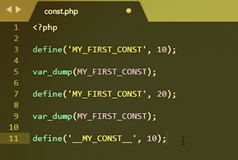
Переходим к предопределенным константам. Например, когда вы покупаете телефон, у вас уже есть установленное приложения: будильник, отправка смс сообщений. Также и в PHP есть встроенные константы, которые помогают и упрощают процесс разработки. Давайте их разберем.
Первая константа - это константа FILE. Это константа указывает полный путь к файлу, который сейчас исполняется (указывает путь до файла от корня). Проверим.
Следующая константа - это константа LINE. Это константа выводит строчку, на которой она была использована. Видим, что вывелось 5. В документе это тоже пятая строчка. Если мы вызовем это константу дальше уже на седьмой строчке, мы увидим, что вывелось 7.
Следующая константа - это константа DIR. Константа выводит путь к папке, в которой лежит исполняемый файл.
Есть еще четыре константы, суть которых мы с вами раскроем позже. Но рассказать о них необходимо. Это константа FUNCTION, которая выводит название исполняемой функции.
Константа CLASS выводит название исполняемого класса.
Константа METHOD выводит название исполняемого метода в классе.
И константа NAMESPACE, которая выводит название пространства имен. Но поскольку мы пишем код не в функции, не в классе, не в методе и даже без пространства имен, то все это должно вывести пустые строки. Поскольку эти константы просто не определены. Это список констант, который вам могут понадобиться. Эти константы принято называть магическими константами, поскольку они могут менять свое значение в зависимости, например, от строки кода, как константа LINE, от исполняемого файла, как константа FILE, также от функции, класса, метода или даже директории. Стоит отметить, что эти константы не чувствительны к регистру. То есть, если мы маленькими буквами напишем LINE, то все будет работать. На этом с константами все.
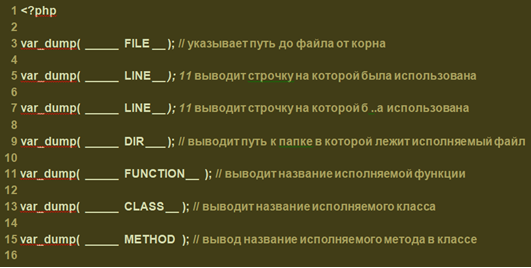
Но есть еще одна важная тема "Суперглобальные массивы". Что же это такое? Давайте приведем пример. Мы сделали запрос с какими-то данными на веб-сервер. Веб-сервер успешно передал данные PHP. И вот эти данные PHP нужно где-то сохранить, а еще лучше дать возможность пользоваться этими данными в любом месте в скрипте. Как раз-таки и для этого были придуманы суперглобальные массивы. Всего супер глобальных массивов в PHP - 9. Сейчас мы с ними познакомимся.
Первый суперглобальный массив - это массив GET. В него помещаются все параметры, которые пришли через адресную строку браузера.
Второй суперглобальный массив - это массив POST. В него приходят данные, которые были переданы методом POST, то есть данные, которые содержатся в теле запроса. Пример с методом пост мы приведем чуть позже. Третий суперглобальный массив это массив - FILES. Массив FILES используется при загрузке файлов на сервер. В нем хранятся данные о временном местоположении файла, о названии файла и о его размере.
Следующий суперглобальный массив - это массив COOKIES. В нем хранятся данные, которые были сохранены в браузере пользователем. Смотреть cookies, которые были сохранены в браузере можно с помощью инструментов разработчика. В Google Chrome нужно нажать F12 и перейти во вкладку Appclication.
Следующий суперглобальный массив - это массив REQUEST. Этот массив содержит в себе два массива: массив GET и массив POST.
Следующий очень важно суперглобальный массив - это массив SESSION. В нем хранятся данные пользовательской сессии. Также с помощью него очень удобно передавать данные между различными частями исполняемого скрипта.
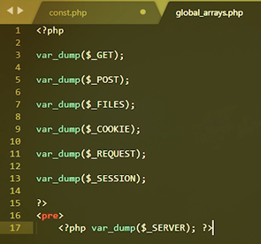
Еще один очень важный суперглобальный массив - это массив SERVER. В этом массиве хранятся данные о сервере и данные, которые пришли нам от клиента. Давайте пробежимся по ключам, которые наиболее часто используются. Первый - HTTP_HOST - содержит содержимое заголовка HOST, переданного на сервер.
Далее - HTTP_USER_AGENT - содержит информацию о браузере пользователя; может также содержать информацию об операционной системе. HTTP_COOKIES - cookies, которые были переданы на сервер. SEVER_NAME - имя хоста, на котором выполняется текущий скрипт. SERVER_ADDR - IP адрес, на котором выполняется текущий скреп. Соответственно, SERVER_PORT - это порт, на котором выполняются текущий скрипт. DOCUMENT_ROOT - это путь от корня до корневой папки сайта. REQUEST_SCHEME - это протокол передачи данных, который был использован. SCRIPT_FILENAME - это путь до исполняемого файла от корня. REQUEST_METHOD - это метод,, который был использован при выполнении запроса. QUERY_STRING - здесь содержатся параметры, которые были переданы через адресную строку браузера. REQUEST_URI - здесь содержится имя файла, который был вызван, вместе с параметрами. SCRIPT_NAME - здесь содержится имя файла, но уже без параметров. Вот основные ключи массива SERVER, которые могут вам понадобится.
Но есть и еще один массив, называется GLOBALS. Пишется он без нижнего подчеркивая - это важно, чтобы не перепутать. И в нем хранятся переменные, доступные глобально. То есть определив в массиве GLOBALS ключ в одном скрипте вы можете использовать потом этот ключ в другом скрипте.
Важно обратить внимание еще на один момент. Супе глобальные массивы содержат в себе данные, которые пришли от пользователя, от клиента, и доверять этим данным не нужно. Часть из них можно подделать. Часть из них содержит в себе не безопасные данные. Вам нужно убедиться, что данные соответствуют тем, которые вы ожидали увидеть. Если вы ожидали видеть строку, на вход должна быть подана строка; если вы ожидали увидеть файл, проверьте его расширение. Если вы хотели загрузить картинку, а вам прислали exe-файл, загружать его на север не нужно. Мы с вами поговорили о константах, о встроенных константах. Узнали, что такое суперглобальные массивы и как глобально определять переменные.
3.2. Выражения, операторы
Операторы. В зависимости от количества операндов, которые принимают операторы, их делят на три типа: унарные операторы - они принимают всего лишь один операнд; бинарные операторы - они принимают два операнда; тирнарные операторы, но такой оператор всего лишь один. Его рассмотрим позже.
Давайте рассмотрим основные операторы в РНР. Первый это конечно оператор присваивания. Оператор присваивания это бинарный оператор, он принимает два операнда. Первый это переменная, в которой нужно присвоить значение. А второй это само значение. Тут нужно заметить, что оператор присваивания можно использовать цепочки например D = A = N. Работает это справа налево.
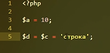
Перейдем к арифметическим операторам. Первый арифметический оператор, который мы с вами разберем, это оператор отрицания. Также известный, как унарный минус. Этот оператор выведет значения операнда с противоположным знаком, но не изменит его. Приведем пример. Вот мы вывели минус значение переменной А видим минус 10. Но если потом выведем значения переменной А то оно также останется 10. Двигаемся дальше.
Следующая арифметический оператор это оператор сложения. Это бинарный оператор и принимает два операнда. Также работает и оператор вычитания. Идем дальше.
Следующий оператор это оператор умножения. Он работает так же как оператор сложение и оператор вычитания, только умножает 2 операнда и выводит их произведения.
Как вы уже могли догадаться последний император это оператор деления. Есть еще один интересный оператор это оператор - деление по модулю. Он выводит остаток деления первого операнда на второй.
Следующий тип операторов это операторы сравнения. Как ясно из названия, их используется для того чтобы понять, равны 2 операнда или не равны. В РНР сравнивание может осуществляться двумя способами - строго и не строго. Нестрогое сравнение позволяет сравнивать операнды разного типа, а строгое сравнивание требует соблюдения одинакового типа у операндов. Наряду с операторами строгого и не строгого равенства стоят операторы строгого и нестрогого неравенства. Синтаксис его выглядит следующим образом !=. Это нестрогое неравенство, а строе неравенство это !==. Оператор неравенства нестрогого возвращает True в том случае, если операнды не равны между собой, а оператор строгого неравенства возвращает True в том случае, если операнды не равны между собой или их тип не равен. Двигаемся дальше. Следующий оператор сравнение это строго больше(>). Этот оператор проверяет больше ли один операнд, чем другой. Как оператор строгого и нестрогого равенства/неравенства, в операторе строго больше можно сравнивать строки. Пример "Asd>asd". Работает это следующим образом. Сравнение происходит посимвольно, начиная с первого символа каждого операнда, причем символ, написанный в нижнем регистре, больше чем символ написанный в верхнем регистре. Если символы равны, сравнивают следующие символы.
Аналогично с оператором строго больше, мы используем оператор строго меньше (=/<=).
Есть еще один очень необычный оператор сравнения, который был добавлен только в PHP 7. Этот оператор называется spaceship, то есть космический корабль. Выглядит он следующим образом. Знак меньше знак равно и знак больше (<=>). Что же оператор делает. Этот оператор возвращает минус 1, ноль или единица. Если первый оператор соответственно меньше равен или больше чем второй оператор.
Следующий тип операторов это логические операторы. Логические операторы, как и операторы сравнения, сравнивают между собой два операнда, только логический оператор берет булевы значения операндов. То есть неявно приводит их к типу boolean. О неявном привидении поговорим с вами позже. Как и операторы сравнения, логические операторы возвращают одно булевое значение True/False, в зависимости от операндов, стоящих по обе стороны от оператора.
Итак первый логический оператор это логическое И (&& / AND). Логическое И сравнивает между собой два операнда и возвращает значение True тогда и только тогда, когда оба операнда равны значению True. Здесь нужно заметить одну очень важную особенность вообще программирование не только в РНР. Во многих высоко уровнях языках программирования это реализовано. О чем я говорю. Я говорю о том, что при вычисления значений значение второго операнда не обязательно может быть вычислено. К примеру B(false) && C(True). Интерпретаций даже не доходит до вычисления значения C. Потому что он видит ,что используется оператор логическое И. Если значение первого операнда равно False, то значение всего выражения тоже уже будет ровно False и вычислять второй операнд смысла не имеет. Логические операторы также можно использовать в длинной цепочке.
Следующий оператор это логическое ИЛИ (|| / OR). Логическое ИЛИ возвращает True тогда и только тогда ,когда хотя бы один из операндов имеет значение True. Следующий логический оператор это исключающее ИЛИ. Исключающее ИЛИ возвращает True тогда и только тогда, когда только один из операторов имеет значение True.
Следующий логический оператор это логическое "не" он применяется для версии логического значения выражения. Этот оператор унарный и принимать только один оператор. Давайте посмотрим как он работает. За комментируем лишнее. Напишем var_dump, отрицание от а, отрицание от б, отрицание от с. Для сравнения можно вывести изначальное значение переменных. Var_dump с. Проверим. В первом случае было true, стало false. Во втором случае было false стало true, и в третьем соответственно было true и стала false. Смотрим, да действительно оператор отрицания инвертирует большое значение. Выражение следующая группа операторов это забитого оператора хоть php и высокоуровневый язык программирования в нем имеются низкого уровня и операторы для работы с двоичными представлениями чисел. Давайте приведем пример и посмотрим как это все работает. Пусть у нас есть два числа. Числом а=170 и число б=240. Чтобы посмотреть, как эти числа выглядит двоичная система исчисления в принципе есть функция называется дэцбин. Принимает она один аргумент. Это само само число, которое нужно перевести на двоичную систему исчисления. Давайте посмотрим. Видим 1:0 1:0 1:0 1:0 и 1111 0000. Теперь по битовых операторов всего четыре. Это и или включающая или и отрицание. Все это работает так же, как и логические операторы. Только вместо пирантов сравнивают с биты то есть побитого и сравнивает каждый бит аспирантов. Начиная с 1. То есть побитого и вернет единичку, тогда и только тогда когда оба бита операторов являются единичками соответственно побить его или вернет одиночку тогда когда хотя бы один из битов равен одиночке еще или вернет единичку тогда когда один вид а другой бит ноль и отрицания просто инвертирует биты единички заменяются нули а нули наедине очки. Давайте попробуем это сделать на примере побитового и. А и б. И смотрим. У нас вывела в десятичной системе исчисления. Сейчас мы это все переведем в двоичное. Итак, смотрим первый бит единичка и единичка. В результате единичка. Второй бит 0. Здесь единичка. В результате 0 3 бит- 1 и 1. В результате 1. Далее 4 бит 0 и 1 в результате ноль. Ну и дальше видим что здесь все нули. Соответственно результату логического и тоже будут все нули.
Операторы инкрименты и дикременты. Что это такое? Зачастую очень часто нам необходимо увеличить значение переменной или уменьшить это значение переменной на единицу, например в циклах, когда нужно увеличить на один индекс цикла от циклов мы позже еще поговорим. Давайте для начала рассмотрим эти операторы. Пусть у нас есть перемены, в которых хранится значение 10. Есть два типа инкремента и дикремента есть постфиксный и префиксный.
Постфиксный выглядит следующим образом напишем $b=$a++. Что происходит. Значение переменной а записывается в переменную b. А затем значение перемены а увеличивается на единицу. Давайте проверим. Посмотрим какое было значению перемены а. Затем значение переменной а, которая стала и значение переменной в. Проверяем видим 10 11 и 10. То есть в переменную В записалось старое значение перемены А, после этого значение перемены увеличилось на единицу. Аналогично работает дикримент, только вместо плюсов указываем минусы. Пишем два минуса. И видим что 10 9 и 10, то есть в записала старое значение а затем значение переменной уменьшилось на единицу.
Теперь рассмотрим префиксный- отличается от постфиксного то что он указывается до операнда то бишь вот так вот. Что это значит. Это значит что сначала значение переменной а увеличится на единицу. А затем значение вот этого выражения запишут в переменную б. Давайте проверим. Новое значение переменной А, значение перемены В. Было 10, стало 11 и теперь в переменную В также записалось 11. Так же работают и с декрементом. 10 9 и 9 10. Стала 9 и в переменной тоже 9. Для строк тоже есть свои операторы. Правда такой оператор всего лишь один это оператор конкотинации, то есть оператор для склеивания строк. Сам оператор выглядит как обычная точка.
Разберем небольшой пример, пусть есть переменная, А со значением "hello"запятая и пробел и переменной б со значением "world!" давайте с клеем эти строки и выведем их на экран. Плюс ни в коем случае нельзя использовать для склеивания строк. Об этом мы с вами чуть чуть попозже поговорим. Давайте проверим результат. Видимо "hello, world" также сюда можно добавить еще какую-нибудь строку например пишем "hello world, my name is Kolya". Так можно добавлять строки бесконечно пока нам не надоест. Но я напомню что в двойных кавычках можно указать значение переменных, точнее сами переменные у которых должно вынести значение. В нашем случае это будет доллар а доллар в my name is Коля. Такой вывод даст тот же самый результат "my name is Kolya" на это указывается в двойных кавычках. Двигаемся дальше. Переходим к сокращенном формулу операторов. Вот давайте проведем для начала небольшой пример. У нас есть переменная а значением 10 надо к нам к ней прибавить просто 5. Подпишем в долларах а равно доллар а плюс 5. Программисты люди ленивые и поэтому они придумали в сокращенной форме операторов. Выглядит она следующим образом для оператора сложения -Плюс равно 5. Вот эти две записи на 5 шестой строчке не полностью идентичны. Давайте сравним. Пусть б у нас тоже будет 10. Только здесь мы будем складывать переменные б, а тут будем складывать к переменные а. Выведем все это на экран. Обновляется видим 15 и 15. То есть это все одинаковое. Также это работает и с вычитанием. И с умножением. И с делением. И взятие остатка отделения. И разумеется сконкотинация строк это тоже работает. СТРИНГ и перемены с. Какую нибудь еще строку. С целью. Допустим. Давайте попробуем посмотреть что хранится в переменной с. Строка my string is 10. Это сокращенное форма операторов. Есть еще один оператор который очень сильно упрощает жизнь программиста.Это тернарный оператора. Оператор который принимает три операнда. Давайте его рассмотрим и рассмотрим его синтаксис. Потому что это очень часто используемый оператор. Для начала объявим перемены а значением true. И пусть в зависимости от переменной а нам в переменную б нужно записать либо одно значение либо другое. Выглядит следующим образом напишем доллар а. вопросительный знак. Переменной. Доллар а. Запишем это в кавычках, хранится значение true и двоеточие. Ложное назначение переменной А. Как это работает. Если логическое выражение указанное до вопросительного знака. Имеет значение true то в перемену записывается. Выражение записанное после вопросительно знака но до :. Если же значение выражения логического до восклицательного знака то в переменную б запишутся значение последует :. Давайте проверим. Обновляет страницу. Видим в переменной а хранится значение true. А если мы заменим на false. Ложное значение переменной а. Давайте запишем 10. И сюда запишем логическое выражение посложнее. Например если переменная а больше 5, то выведем строку- " это очень большое значение". А если перемены а меньше пяти. То запишем сюда "недостаточно хорошо". И проверим. Это очень большое значение потому что значение логического выражения здесь истина то есть 10 больше чем 5. Тернарный оператор можно записать еще в сокращенном виде выглядит следующим образом. Переименуют с запишем переменную а пропускаем значения между вопросительным знаком и : и пишем значение" недостаточно хорошо". Работает это следующим образом. Если значение выражения указанное до вопросительного знака true, то за пишется именно значение самого выражения. Иначе запишется строка "недостаточно хорошо". Давайте проверим. Видим написано это очень хорошо. Это очень большое значение и комментируем лишнее. Что же хранится в переменной с. Переменной с хранится 10, то есть у нас записалось значение переменной 10. Вот эта запись на седьмой строке полностью идентична записи следующей. Доллар а вопросительный знак доллар а бывает очень достаточно хорошо. Просто запись на седьмой строке сокращена и экономит немного времени программистом. Есть еще одна форма запись терарного оператора. Она доступна лишь с версии php 7:0 выглядит она следующим образом доллар д равна доллар а два вопросительных знака. Такого нет. Как это работает. Во первых проверяется существование переменной а объявлена ли это переменная. Во вторых проверяется логическое значение этой переменной. Если эта перемена существует и ее значение true то тогда запишите переменную д значения переменной а иначе запишите строка "такого нет". Давайте попробуем проверить. Сделаем еще второй пример. Допустим переменной "май верайбл" у нас не существует она не объявлена. Запишем 2 вопросительных знака. И тоже такого нет. И проверим, что хранится в д и е. Смотрим. Видим что записано 10. И такого нет. Потому что перемены а существует и в ней хранится значение 10 а переменной "май верайбл" нет поэтому туда записалась строка "такого нет". На этом урок закончен. Мы с вами узнали много всего интересного об операторах рассмотрели выражения, узнали какие бывают операторы как правильно работать с операторами.
3.3. Управляющие конструкции, циклы, приведение типов
Третий урок третьего раздела. На этом уроке мы с вами узнаем много интересного. Мы рассмотрим условные конструкции, рассмотрим циклы, научимся управлять ходом выполнения программы. Также вы получите ответы на многие вопросы, которые у вас могли возникнуть до этого, потому что мы рассмотрим приведение типов. Мы уже познакомились с вами с выражениями и знаем, что интерпретатор выполняет код последовательно строчка за строчкой выражение за выражением. До тех пор мы могли с вами управлять лишь ничтожным количеством функционала, например, какую переменную с какой сложить, какую строчку вывести, какую строчку с какой склеить. Этого всего недостаточно, что если нам нужно, например один блок кода пропустить, а другой блок кода выполнить и все это зависит от какой то переменной или от какого то выражения. Для этого как раз и придуманы условные конструкции, в частности конструкция if. Давайте приведем пример, пусть нам нужно написать программу, которая ведет число в квадрат. Но только если это число больше 10. Как мы это будем реализовывать. Вспоминаем про условную конструкцию if. Объявим переменную, которую мы будем возводить в квадрат и дадим ей значение 15 и проверим. Пишем if и в скобках круглых условие а больше 10.
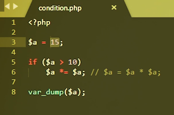
Обновляем страницу. Получается 225. Это есть 15 в квадрате. Сделаем значение переменной 5 и посмотрим, выполняются ли условия. Видим что нет, не выполнялось, значения так и осталось 5. Что ж если нам нужно выполнить не одну строчку кода после выполнения условия, а несколько. Для этого мы весь этот блок кода заключаем в фигурные скобки. И тогда можно выполнять сколько угодно строк кода, но только если это условие выполнялось.
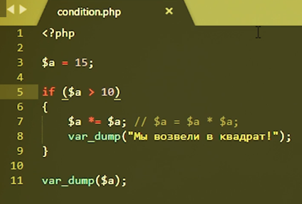
Давайте немного усложним задачу. Если переменная больше 10, но меньше 20 возведем ее в квадрат. Иначе в любом другом случае мы прибавим к ней 5. Запишу эту задачу, чтобы вы не запутались. Вспоминаем про многострочные комментарии.
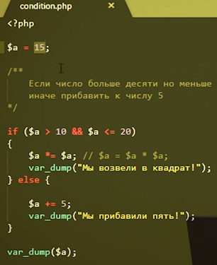
Меняем значение на 15. Мы возвели в квадрат 225. Ведь число 15 больше 10, но меньше либо равно 20 изменим значение на 30. Обновляем. Видим, мы прибавили 5 и значение 35. Хорошо, усложним еще сильнее задачу, что если нам нужно выполнить следующие действия. Если число больше 10 меньше, либо равно 20, то возведем в квадрат. Иначе если число больше 20, но меньше 30, возведем его в куб, а иначе прибавим 5. Запишем эту задачу. Здесь нам понадобится конструкция else if. В отличии от обычного else который просто выполняет блок кода, этот блок кода выполняется только если выполняется условие записанное в скобках.
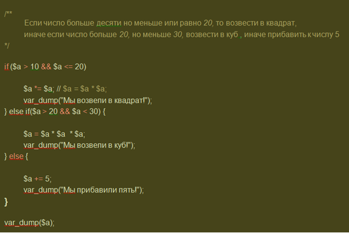
Посмотрим на результат. Пусть у нас будет 25. Обновляем. Мы возвели в куб, получилось 625. Запишем переменную, а число 11 мы возвели в квадрат 121. И последний пример. Запишем число ноль. Мы прибавили 5. Эти условия выполняются и проверяются последовательно сначала, если условие выполнялось. Далее интерпретатор даже не пойдет и не станет смотреть этот код, потому что надобность в нем исчезла потому что выполнялось первое условие. Если первое условие не выполнялось интерпретатор проверяет второе условие. Если же оно выполнялось. Третье не будет проверяться и выполняться, если оно не выполнялось интерпретатор дальше не смотрит на конструкцию.
Чисто теоретически количество if-ов может быть бесконечным. То есть эту задачу мы можем расширять бесконечно. Допустим если число больше 30 но меньше 40 если больше 40 меньше 50. Здесь возникает вопрос, а не станет ли наш код грязным, если у нас будет куча if-ов. Согласитесь разобраться сложно что происходит как раз таки для таких очень длинных if-ов. Есть специальная конструкция называется switch case. Сейчас мы ее рассмотрим.
Задача следующая, у нас перемены есть слово, которое либо фрукт, либо ягода, либо овощи. Соответственно если это фрукт, то нужно вывести слово фрукт. Если это ягода то есть слово ягода, если это овощи то есть слово овощ. Запишем эту задачу в переменной. Для этого как раз таки нам понадобится конструкция «switch case». Сама конструкция выглядит следующим образом
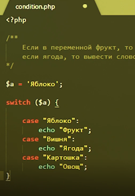
Давайте проверим работает ли это. Открываем браузер. Видим, что вылились фрукты, ягоды, овощи. Это все особенности конструкции. Дело в том что после каждого кейса если нам не нужно дальше продолжать поиск, мы должны поставить брейк. Это означает что дальше поиск производиться не будет. Дальше попозже приведу пример где не нужно писать брейк и все станет понятно. Давайте проверим что сейчас все работает. Видим что написали фрукт если мы сюда напишем. А что если у нас несколько фруктов яблоко апельсин. Давайте этот кейс тоже запишем. Но в чем здесь фишка. В кейсе яблоко и в кейсе апельсин, мы должны вывести одно и то же. Поэтому мы можем записать просто кейсы друг за другом. Давайте запишем еще ягод малины например. Клубника. И еще один овощ капуста. И попробуем поэкспериментировать запишем малина. Ягода запишем картошка.
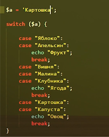
Теперь переходим к циклам. Это одна из самых распространенных конструкций в php и вообще в любом языке программирования. Циклы нужны для того чтобы последовательно, но с различными данными исполнять один и тот же блок кода. Давайте попробуем разобрать цикл, а потом мы соответственно на примере уже поймем, зачем он нужен. Есть несколько видов цикла. Первый вид это цикл с предусловием. Конструкция выглядит следующим образом пусть у нас есть переменная и в которой хранится 10. И нам нужно вывести все числа от 10, ну пускай будет там храниться ноль. И нам нужно вывести все числа от 0 до 10.
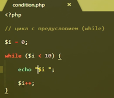
Что здесь произошло. Изначально в переменной хранился 0. Мы зашли в цикл. То есть перемены. Далее снова проверяется условия в скобках пока $i меньше 10.
Второй тип цикла это цикл с пост-условием. Цикл пост-условия, отличается от цикла с предусловием лишь тем, что условия проверяется после выполнения блока кода. Этот блок кода будет выполняться до тех пор пока истинно выражение указанное в скобках давайте сделаем то же самое. И равен 0. Пока и меньше 10. Мы будем писать саму перемен пробел и увеличивать и одиночку.
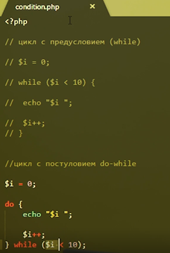
Проверим. Видим что результат такой же. Но в чем разница спросите вы. А разница в том, что если вот это выражение указанное в скобках заведомо ложное, то есть оно просто ложно изначально, то в цикле с пост условием этот блок кода выполнит хотя бы один раз. А в случае с циклом файл с предисловием этот код не выполнит ни разу. Следующий возможный цикл, это цикл со счетчиком - цикл for. Конструкция выглядит следующим образом.
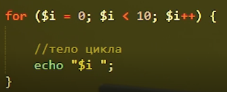
Видим тот же самый результат. Давайте немножко усложним задачу, чтобы было поинтереснее. Пусть нам нужно вывести только честные числа. Как мы это будем делать, воспользуемся циклом форм честно числа от 0 до 10 от 0 до 9. Итак мы воспользуемся уже знакомым нам условием условным оператором. Перемены и остаток деления на 2 равен 0. Вспоминаем, что значит процент остаток деления на 2. Любое число, которое в остатке от деления на 2 дает ноль, является черным числом.
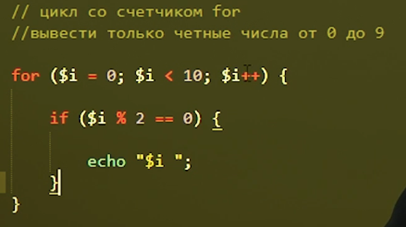
Но есть еще один способ реализовать эту задачу, тоже с помощью циклов. Воспользуемся особенностью цикла и немножко математикой. Мы знаем то что четыре числа идут через 1 то есть 0 2 4 6 8 и соответственно вместо того, чтобы проверять каждое, мы можем проверять каждое второе число и даже не проверять его, раз мы начинаем с нуля.
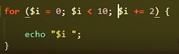
Давайте проверим. За комментируем лишнее обновлением. Видим тот же самый результат. Естественно в реальном программирование лучше использовать более ясную конструкцию. Да она медленнее работать будет, но тут сразу понятно что имеется в виду. А здесь тоже в принципе понятно, но сложнее догадаться.
Перед тем как перейти к самому интересному, мы разберем еще один цикл, это цикл встреч цикл foreach, цикл для перебора массивов. Есть у него два вида, с ключом и без ключа. Давайте сначала разберем без ключа. Пусть у нас есть массив А и в нем хранятся какие то элементы.
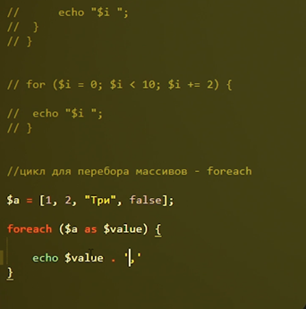
Проверим. False у нас не вывелся. Попозже мы разберем почему он не вывелся. Давайте пока его заменим на 1,5.
Цикл с ключом выглядит вот так.
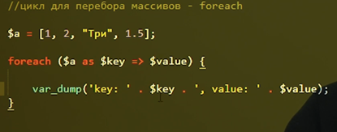
Смотрим. Итак, ключ 0 значение 1, ключ 1, значение 2, ключ 2 значение строка, и ключ 3 значения полтора.
Очень важно иметь в виду то, что не всегда можно цикл закончить. Это полностью ложится на плечи на плечи программиста. Давайте выберем цикл и приведем пример.
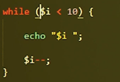
Вдруг программист ошибся и вместо и плюс написал минус. И тогда переменная $i, которая изначально была нулем будет уменьшаться и никогда не станет больше 10. И этот цикл будет выполняться бесконечно. За этим нужно следить именно программистам, потому что если мы запустим такой код, то скрипт упадет и весь код, который планировался выполняться после цикла, выполнен не будет.
На этом с циклами у нас все, переходим к самой интересной теме - приведение типов. Сейчас вы получите ответы на возможные вопросы, которые у вас уже возникали. Например что будет если сравнить строку в, которой хранится «1» и просто 1. Что будет если сравнить пустой массив и ноль. На эти вопросы как раз таки я сейчас вам и отвечу. Давайте для начала приведем пример. У нас есть массив. Есть у нас переменная осьминог. Мы сравним уже знакомым способом эти две перемены. Если они равны выведем «как две капли воды». А иначе выведем «Ну вообще не похоже».
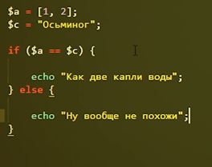
Объявляем. Ну вообще не похоже. Оно и понятно, потому что у нас строка осьминог и массив. Вообще нужно оговориться, что если сравнивать одинаковые типа допустим число с числом, то тут ничего сложного нету. Понятно, что 2 не равно 3. И вот такая строка не такой строке. То что трудно равенству то что полтора не равно 7,5 это все очевидно. Об этом и говорить не будем мы будем говорить о крайних случаях. И так первый случай это приведение строки в число. Каким образом строка вообще приводится к числу. Воспользуемся явным приведением типов. Мы можем записать то, что мы приводим типу int строку «строка». И посмотрим, что это выведет. Вывел ноль, но это не всегда. Допустим если мы сравним «10» и число 10, к большому удивлению мы увидим равенство. Все дело в том, как строки приводится к числам. Делается это следующим образом, если первый символ строки не число, то результат будет всегда ноль. То есть если это не число, буква допустим, а потом числа, буквы, что угодно, то результат будет ноль. Если первый символ это число, то результат будет отличаться от строки. Такое число пока это возможно, то есть пока идут цифры это будет записано в число. То есть если у нас 105, то в число запишут со 105. То есть пока возможно выдернуть из строки из начала строки число это будет делаться. То есть здесь будет результат 105. Давайте проверим, видим ноль и 105. Вот и соответственно когда мы сравниваем что то с числом, это что то пытается привестись к числу и соответственно строка 10 текст приведенная к числу 10. Именно поэтому строка 5 равна числу 5 например и для php разницы нету. Но если мы сравним строки торжественным равенством строку 5 и число 5 то же мы увидим false. То есть если для нас принципиально, что слева должно быть именно число или справа должна быть именно строка, то мы используем торжественное равенство. А если мы сравним просто символ двумя символами равно то мы увидим true. Приведем пример на эту тему.
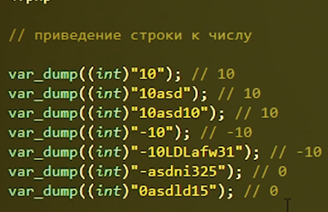
Можно приводить также чисто с плавающей точкой. То есть строки также могут приводиться к числам с плавающие точкой. Приведем несколько примеров.
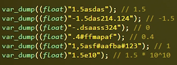
Далее операции арифметические с числом и строкой. Если мы используем арифметические операции, то по логике самих вещей мы используем числа и поэтому все пытается привести к числам то бишь если мы.
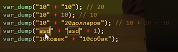
Переходим к булеву типу. При преобразовании любого типа в логический тип, значениями false являются следующие значения. Сам false, ноль, то есть число ноль, float ноль 00.00 плавающий точкой, пустая строка ноль, пустой массив, null, тип о котором мы пока ничего не знаем. Сейчас я вам о нем расскажу. Это особый тип который означает ничего. То есть если мы хотим чтобы переменная была определена то есть не было известно в коде, но в ней ничего не хранилось и мы не хотим чтобы в ней был ноль или строка, мы можем присвоить ей null. Это означает ничего, пусто, то есть пустое множество.
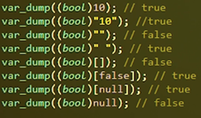
Ранее я сказал, что арифметические операции можно использовать только с числами или с типами которые приводятся в число. Но у массивов оператор сложение переопределен. И это значит, что он обладает особой логикой.
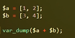
К первому операнду прибавляется второй. Но если во втором операнде уже есть элементы с таким ключом они просто игнорируются. А если таких элементов нет, то элемент добавляется с ключом из второго операнда.
Допустимые операции с массивами это операция сложения, операция сравнения и операция торжественного сравнения, операция неравенства и операция традиционного неравенства. Для любого из типов преобразование в массив, даст массив в котором будет единственный элемент, это тот элемент, который мы пытались преобразовать в массив. Например, если мы пытались преобразовать массив число 10, в результате у нас будет массив в котором будет один элемент 10. Если мы пытаемся преобразовать массив false. Это будет массив в котором будет один элемент. Если мы пытаемся преобразовать в массив, уже готовый массив, то не поменяется абсолютно ничего. Будет такой же массив. Если же мы сравниваем прочие ложные типы с пустым массивом не строгим равенством, то следующие элементы вернут true.
Я вам уже показал много операторов.
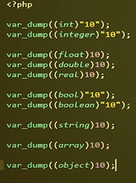
Также для приведения типов в принципе есть функции приведения типов.
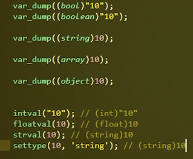
На данном этапе это все, что вам нужно знать о приведении типов. На этом урок закончен. Мы узнали с вами очень много всего интересного, информации было много, информация была сложной, но эту информацию нужно усвоить. Вы узнали об управляющих конструкциях if else, switch case, узнали о циклах с предусловием, с пост-условием, for, foreach, узнали о приведении типов.
3.4 Функции для работы, подключение файлов
Для вас этот данная часть будет самая интересная. Мы разберем с вами функции для повседневной работы в PHP. Разберем с вами подключение других скриптов в наш скрипт PHP. И также наконец-таки разберем готовый рабочий пример из полностью с нуля напишем функционал. Поехали. Начнем с функции для ежедневной работы с PHP первая уже давно вам знакомая функция — это функция "var_dump". Она выводит на экран тип переменной и значение переменной есть функция для проверки типа переменной проверка типа переменной. Эта функция "is_array" - проверка на массив "is_bool" - проверка на Булев тип "is_float". Отделим их немножко "is_float" "is_double", "is_real". Вот эти три функции они абсолютно идентичны ничем они не отличаются. Просто последние две это псевдоним для "is_float", "is_int", "is_integer" и "is_long" - проверяют что это цело - численный тип."is_null". В границе или в переменной "null", "is_object" является ли переменнаяа объектом "is_scalar". Является ли переменная скалярным типом. Вспоминаем что такое скалярный тип "is_string" - является ли переменной строкой еще один, еще одна функция это "isset". Она проверяет определена ли переменная и отлично ли значение переменной от"null". То есть если у нас есть какая-то переменная "a" и в ней хранится 10, есть переменная "b" в ней хранится "null". "isset(a)" вернет "true", isset(b) вернет "false" "isset(c)" переменная, которую мы даже не определили тоже вернет "false". Далее функция "empty". Пишется она вот так вот, она проверяет определена ли переменная и отлично ли значение переменной от "false". То есть если перезаписать функцию "empty" она будет выглядеть вот так вот не "|isset(var)" или var не строго равен "false". То есть.. "empty" от пустого массива вспоминаем что пустой массив если его привести к Булева типу он будет "false". То есть "empty" вернет "true", "empty" переменные "c" который мы даже не определили вернет "true".. "empty" от массива с каким то от не пустого массива от любого не пустого массива вернет "false", "empty" от пустой строки вернет "true". "empty" строки в которой хранится только ноль вернет "true", "empty" от самого числа ноль вернет "true". "empty" от минус единички например вернет уже "false" потому что минус 1 равно равно "false" это "false".
Нельзя привести -1 к "true". Эта функция "empty". Далее переходим к функциям для работы с массивами. Пусть у нас будет массив с двумя
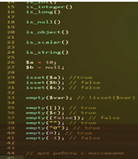
ключами "key1" и значением "value" и ключ "key2" и значение 30. Первая функция это функция "count". Она выводит на экран количество элементов в массиве. Протестируем "var_dump(count2)". У нас в массиве два элемента все верно. Далее следующая функция это функция "array_pop". И пишем массив как аргумент эта функция извлекает из массива последний элемент. Смотрим что вывелось 30. И давайте выведем сам массив после "array_pop". Итак и выведем изначальный массив еще чтобы было нагляднее. Итак был массив "key1==value1" и "key2(30)". Извлекли мы 30 последний элемент массива с помощью функции "array_pop". И сам массив тоже изменился. Последний элемент с него удалился. Аналогичная функция "array_pop" функция "array_shift". Она извлекает не последний элемент а первый элемент из массива. И работает аналогично "array_pop". Проверим сам массив после вывода. Был "key1==value, key2(30) извлекли мы "value1" первый элемент в массиве и сам массив стал на один элемент меньше то есть остался только "key2(30)". Если же мы и "array_pop" раскомментируем и оставим "array_shift" то соответственно массив у нас в конце останется пустой потому что мы в массиве из двух элементов извлекли первый и извлекли последний и там больше ничего не осталось. Функции противоположные функциям "array_pop" и "array_shift" это "array_push". Первый аргумент это массив. И второй аргумент это само значение которое мы должны положить и "array_unshift" также. Первая функция добавляет в конец массива "arr" элемент со значением 30, "array_unshift" добавляет в начало массива "arr" элемент со значением "value1". Вот видим что у нас был остался пустой массив после "array_pop" и "array_shift" и после того как мы сделали "array_push" и "array_unshift" у нас появилось ключ ноль значения были 1 и ключ один значение 30. Дальше функция "array_keys". Принимает как аргумент массив выводит на экран все ключи массива "arr". Закомментируем все лишнее. Оставим только вывод массива самого. Итак массив "key1value1key2(30)" и "array_keys" нам вывел "key1" и "key2" то есть "array_keys" возвращает массив в котором хранятся ключи массива
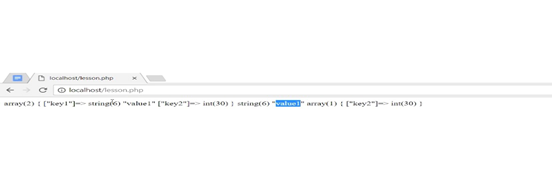
"arr". Есть также функция "array_values" который как вы могли уже догадаться выводит на экран все значение массива "arr". Видим что "array_keys" вернул "key1" и "key2" "array_values" вернула "value1" и 30 то есть значение массива "arr". Дальше очень часто используемая функция это функция "in_array" она проверяет есть ли элемент со значением которое указано в первом аргументе в массиве который указан во втором аргументе и возвращает Булева значение либо есть - "true" либо нет - "false". Итак проверим есть ли элемент со значением "value1" в массиве "arr". Также проверим есть элемент со значением "in_array" со значением 55 в массиве "arr". Проверяем, видим добавилось "true" и "false". Потому что значение "value1" присутствует в массиве а значение 55 отсутствует. Также есть функция "array_key_exists" Первый аргумент эта функция проверяет есть ли такой ключ в массиве а не значение. То есть мы проверяем если ключ "key1" в массиве "arr". И если ключ 30 или 10 в массиве "arr". Смотрим добавилось "true" и "false". "key1" такой ключ присутствует, если 10 то такой ключ отсутствует. Ну и последняя функция это функция "array_unique" - принимает элемент массив. Эта функция оставляет в массиве только уникальные значения. То есть если мы сюда добавим еще значение 30, потом "asd" добавим "value1" "key6" тоже 30 и выведем на экран "array_unique
". Эта функция оставит массиве только уникальное значение. Вот у нас вывод второго массива. Видим что осталось "key1value1" и "key2(30)" и "key4asd" и все повторяющиеся элементы были удалены из массива. Двигаемся дальше переходим к математическим функциям. Вообще математических функций в PHP огромное количество. Самые популярные это функция abs которая возвращает абсолютное значение числа то есть модуль числа минус 10 это естественно 10 ноль это ноль. И от любого положительного числа это и есть положительное число. Есть функция косинус "cos" есть функции синус "sin" которые возвращают синус аргумента. Есть логарифм "log(05)". Есть функция p которая возвращает число пи (3 14) и (3 14) (159). Есть также константа "M_PI" которая также равна числу пи. Функция "flour" она отделяет дробную часть не целого числа. То есть если у нас число 256 то flour 256 вернет 2. flour от 399 вернет 3 flour от минус 3,2 вернет минус 4. Внимание, функция flour возвращает наиболее близкое целое число меньше чем аргумент то есть 2,56. Наиболее близкое целое число которое меньше чем 2,56 это 2. Самое ближнее целое число к 3,99 но меньше чем 3,99 это 3. А самая ближнее целое число к -3,2 которое меньше чем 3,2 это минус 4. Надеюсь вы знаете что минус 4 это меньше чем минус 3,2. Также есть функция ceil которая полностью обратная функции flour она возвращает наиболее близкое целое число которое больше аргумента. Дальше функция round - округление. Округляет по математическим правилам с 4,5 до 5, 4,4 округлится 4, с 4,9 до 5. Функция "round" также принимает второй аргумент это количество знаков после запятой до которого нужно округлить аргумент
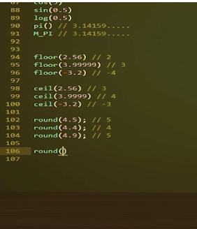
То есть если у нас есть 4,5378 и передадим второй аргумент 2 такая функция вернет 4,54 потому что она округляет два знака после запятой. Соответственно round 4,5333 до одного знака после запятой вернет 4,5. Функция max возвращает максимальное число переданое в аргументы этой функции можно передать сколько угодно чисел допустим 1 2 3 4 5 функция вернет 5. Можно также передать массив из чисел, вернет также 5 аналогичная функция max это функция min. Работает она точно также только возвращает самое минимальное число и можно туда также передать массив тоже вернет единичку. Функция pow сокращенно от power возводит число в степень. Допустим нужно число 4 возвести во вторую степень вернет 16. Если нам нужно 4 возвести в минус вторую степень это вернет нам 1/16 только в числовом эквиваленте то есть 2 в минус второй степени это 0 25. Также для возведения в степень в PHP есть специальный оператор от оператор две звездочки то есть 4 две звездочки 2 это также будет 16. 4 возведется во вторую степень. Этот оператор доступен с версии PHP 5.6. У нас стоит 7.1 так что у нас этот оператор есть. Дальше следующая функция это функция rand - она возвращает псевдо случайное число в заданном диапазоне. Если мы укажем без параметров то неизвестно какое число окажет это зависит от операционной системы и ее разрядности. Если же мы указываем диапазон то 1 число это - от второе число это - до. То есть в данном случае нам вернется случайно число от 0 до 10 (допустим 5) если мы сделаем от минус 10 до 50, соответственно вернет случайное число от минус 10 до 50 может быть 45 точно неизвестно. Переходим к строкам. Пусть у нас есть строка myStr и в ней будет "hello, functions!". Итак первая функция это функция strLen возвращает длину строки переданной в аргумент. То есть соответственно вернется количество символов в этой строке. Далее функция explode эта функция разбивает заданную строку по определенному символу. То есть первый аргумент этот символ по которому разбивается строка а второй аргумент это сама строка эта функция возвращает массив из разделенных частей. То есть если мы строку разделим по символу пробел у нас получится два элемента. Первый "hello," и второй элемент "functions!". Давайте проверим так ли это. Закомментируем все что выше, массив тоже закомментируем. И выведем на экран var_dump explode. Видим два элемента hello, и functions!. Если же если же мы хотим наоборот соединить массив в строку то для этого есть противоположная функция, функция - implode. Заново соединим его только уже с другим разделением. Например напишем var_dump emplode пишем какой разделитель теперь у нас будет вместо пробелов, пусть у нас будет звездочка и дальше передаем массив. Соответственно такая функция должна вернуть строку hello, звездочка functions!. Проверяем видим hello, звездочку functions! все верно. Есть также функция "htmlspecialchars". Эта функция приводит все символы строке в html - безопасные сущности что это значит. Вдруг у нас есть строка <а href='qsoft.ru>QSoft> и закрываем. И функция "htmlspecialchars" заменят все специальные символы на html сущности. То есть открывающий тег заменится, закрывающий тег заменится еще много других сущностей много других символов тоже заменятся. Проверяем и видим то что у нас есть строка <a href> и ссылка на QSoft. Но что было бы если бы мы вывели это не с помощью htmlspecialchars?. Давайте проверим. Видим что у нас вывелась прямо сама ссылка. То есть такой способ это один из способов как обезопасить свой сайт чтобы пользователь не мог подсунуть в какое то поле ссылку. И потом она не выводилась бы всем на главной страничке условно говоря. Далее функция мd5 возвращает md5 - хэш строки. Неважно какая строка var_dump md5(abc) смотрим вернулась 32 строка две на 32 которая является хэшом строки abc. Если мы еще раз захэшируем строку (abc) то мы увидим ровно тот же самый результат. Поскольку md5 всегда одинаково хэширует. Но если строки будут разные хотя бы одна из букв (abb) то хэши будут абсолютно разными. Далее функция trim и ее аналоги ltrim и rtrim. Функция trim удаляет из начала и из конца строки символы пробела табуляции переноса строки с символом возврата то есть очищает нашу строку с двух сторон. Допустим у нас есть такая строка: trim("Hello и /n конце"). Trim вот этой строки нам вернет строку: "Hello", просто в чистом виде. Ltrim очистит эту строку только с левой стороны, то есть нам вернется "Hello". Здесь вернется нам сначала "Hello" а потом куча пробелов и в конце "/n". Rtrim делает то же самое только с конца строки, то есть если мы выведем функцию с таким же аргументом мы увидим кучу пробелов, "Hello" и дальше ничего не будет. Далее функция "substr" - возвращает некую часть строки, то есть можно строку обрезать. Допустим у нас есть строка "abcdef". Первый аргумент этой функции строка с которой мы работаем. Второй аргумент это символ с которого нужно начать обрезать строку, то есть если мы строку "abcdef" обрежем со второго символа у нас останется: "cdef". Есть и третий аргумент у функции это количество символов которые нужно взять. То есть если второй аргумент это символ с которого мы начинаем брать строку, то третий аргумент это длина строки. Если мы укажем одиночку или двойку пускай тоже мы вместо "cdef" увидим просто: "cd". Если мы укажем тройку то видим: "cde". Если же мы не указываем третий аргумент то берется вся оставшееся строка. Если первый аргумент - символ с которого начинаем брать строку отрицательный (минус 2), то счет идет с конца строки то есть с буквы "F". Останется строка: "ef". Если мы также укажем длину строки которую надо взять (допустим 1) то у нас останется только символ "e". Если же мы указываем третий аргумент отрицательным (- 2 допустим) то эта функция рассчитывает длину следующим образом берет полную длину строки и вычитает 2, то есть без последних двух символов. Сначала мы убираем со второго символа (строка "cdef") и минус два последних символа то есть "cd". Если же мы задаем какие то непонятные аргументы, допустим начать обрезать c 4 символа но при этом не брать последние 4 символа строки. Как так возможно?. То есть мы берем с 4 символа "ef" и при этом нужно отсюда 4 символа удалить. Такого быть не может поэтому вернется "false".
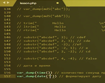
Двигаемся дальше переходим к функциям для работы с датой и временем. Дата и время - две самые популярные функции для работы с датой временем это функции "time" и функция "date". Функция time - возвращает количество секунд прошедших с начала юникс эпохи, то есть это количество секунд, прошедших сначала 1 января 1970 года (так просто исторически сложилось) и так отсчитывают время в программировании и функция "date" - которая форматирует дату. Давайте попробуем вывести их на экран (var_dump(time) и (var_dump(date). Выведем их в формате(год, месяц, день, время, часы, минуты и секунды) проверяем. Видим 1521454092 секунд прошло с 1 января 1970 года и текущую дату. Полный формат можно посмотреть на сайте php.net в определении функции "date".
И также можно посмотреть абсолютно все функции которые существуют в PHP. Также можно найти функции для работы массивами со всем списком функций. Сайт php.net - это ваша библиотека ваш словарь. Если вы что то не знаете или просто пытаетесь что то найти в PHP пишите это в гугле и заходите на сайт php.net, там ответ должен быть. На этом завершаем тему с функциями PHP которые уже встроены и переходим к подключению файлов. Это очень важная тема. Представьте себе: у нас огромный проект огромный сайт и весь код написан в одном файле и разобраться в нем будет невозможно. Поэтому в PHP весь код разбивают по разным файлам с определенным предназначением и кладут его в определенное место в определенную папку. Давайте зайдем в нашу папку с OC панелью, создадим здесь папку назовем ее "files". В ней создадим PHP файл и назовем его var.php. Создадим еще один файл под названием "inc.php. Откроем оба файла, и в var.php мы напишем $a=0 и сохраним.В файле inc.php мы напишем $a++.
Заходим в наш основной файл и попытаемся подключить вот эти два файла. Для подключения файлов есть в PHP две функции: include и require. Обе они просто подключают файлы в текущий скрипт. Это означает что весь код файла просто скопируется и вставится, но в самом файле вы это не увидите. Вы это увидите только когда PHP интерпретатор начнет выполнять скрипт. Итак давайте попробуем подключить var.php. Пишем: include 'files/var.php';. $a=0 теперь находится на третьей строчке. И выведем значение переменной а. Обновляем и видим 0, то есть этот код успешно вставился. Теперь мы подключаем файл inc.php. И снова выводим значения переменной.а объявляем 1 0 1.
То есть вот этот код а плюс вставил все к нам сюда. Если же мы еще раз подключим этот файл . И мы переменые мы уже видим два потому что этот к од ставился два раза. Давайте разберем в чем же отличия iclute от require отличие их заключается в том как они себя ведут когда файл найти не удается. Допустим мы подклчюим файл вместо inc.php . Вот такой файлки , которого явно не существует. И обновим страницу видим что вывился нолик. Вот этот вот на пятой строке. И попытался подключиться файл инк и "крокозября". И нам прислалось предупреждение "warning" такого файла нет. Вот в такой директории. Но это всего лишь предупреждение. Если ошибка типа "warning" она не останавливает выполнения скрипта, скрипт продолжает дальше выполняться. Но если бы мы видим что вывелся единичка потому что вот этот файл просто inc.php. Но если бы мы здесь написали require. То мы бы увидели FATAL ERROR (критическую ошибку), так require он не предупреждает. Он просто не может найти файл и заканчивает выполнение скрипта. И поэтому мы вот этот код результат выполнения этого кода уже не видим. Также есть разновидности require и include это include once и require once. Что же значит once? это означает что такой файл подключится всего лишь один раз за все выполнение скрипта. Если мы напишем вот так вот ожидаем увидеть двойку во втором случае ,видим единичку. Потому что на восьмой строчке include once не разрешают нам второй раз подключить этот файл. Еще один главный вопрос а где же вот эти все файлы ищутся. Если мы напишем здесь varasd , мы видим что он пытается найти файл вот здесь вот эту ошибку если прочитать увидим "failed opening 'files/varasd.php" , и видим странную include path . Что же это значит. Php когда не может найти файл пытается найти его в определенных папках, которая находится в директиве include.path . В данном случае это вот эти папки "PHP-7.4-x64 PEAR PEAR". Это папки по умолчанию. Их также можно настроить специально чтобы PHP искал скрипты, которые вы подключаете в определенных папках. У нас же все настроены как я уже сказал по умолчанию, на тот способ которым мы сейчас подключаем файлы. Этот способ неправильный. Сейчас PHP ищет вот эти файлы относительно файла, в котором мы вызываем include или require. То есть, у нас файл lesson.php . Вот он хранится в корне папки "local host" относительно него папка files и var.php. Если же мы lesson.php скопируем в папку files. И запустим скрипт. Files.lesson.php. Мы видим ошибки. То, что files не найдены. Потому что теперь уже необходимо писать не в files/var.php , а просто include var.php . Это относительный путь к файлу. Обновляем, видим, что все работают. Способ, который я хочу вам объяснить, как подключать файлы следующий. Мы знаем, что у нас есть два помощника. Во-первых, это суперглобальная константа магическая константа DIR. И во вторых это супер глобальный массив SERVER. Давайте попробуем два способа реализовать. DIR. Вспоминаем что за константа хранит путь до текущего исполняего скрипта. То есть если мы напишем include_one __DIR__ ./Var.php . Подключится как раз-таки этот файл. Но путь уже будет абсолютным. Давайте посмотрим, что хранится именно в этой строке.
Обновляем, видем путь абсолютный от корня до самого файла. И файл успешно подключался. Второй способ — это способ через сервер. В глобальном массиве сервер есть ключ DOcument Root который хранит путь от корня операционной системы до папки в которых лежит сам сайт. То есть в нашем случае папки local host и дальше относительно документ рута мы пишем failes inc.php . И здесь то же самое. И третий способ это естественно обычно относительно путь , проверим. Все работает. 0 1. Наконец то мы приступаем к практической части. Сейчас мы с вами подытожить сумируем и применим на практике весь опыт который мы получили за первые три модуля. У меня есть подготовленный файл с версткой. Можете посмотреть на экране. Здесь хранится задачка. Forum.php. Задача следующая. Пользователю предлагается решить пример. Есть первый слагаемое ,есть второе слагаемое. есть поле для ввода в которое пользователь пишет какой то ответ. Нажимаю кнопку готово. Пользователь отправляет решение системе ,система ему говорит правильно он ответил или нет. Первое слагаемое и сумма генерируются автоматически компьютерам при каждом обновлении страницы. Или если пользователь ответил правильно ,если пользователь ответил неправильно, данные должны сохраниться и вывестись ошибка. И соответственно должна вывестись надпись о том что" задача успешно решена, Если задача была решена" . Вот такую задачу мы с вами сейчас и решим. У нас есть верстка. И сейчас мы с вами будем интегрировать. Во-первых, что нам нужно сделать. Сделать там можно во-первых самое легкое, заставить эти числа появляться случайными при каждом запуске страницы. Для этого мы с вами создадим еще один файл в этой же папке назовем его контролер.php. Сразу оговорюсь что разделять верстку и логику работы программы, это очень хорошая практика и очень популярная. Так делать правильно! Так делать надо! Писать все в одном файле некрасиво, а с точки зрения можно сказать этики программирования. Здесь в этом файле, у нас будет храниться вся логика и этот файл именно, мы будем подключать в самом начале в файле верстке. уже знакомый нам с функцией require. Мы знаем, что этот файл находится в этой же директории. Поэтому мы напишем вот так вот контролер.php. Точка запятая. Все. Этот файл подключился поменяем язык в тексте чтобы подсветка работала. Все работает. Итак, сгенирируем 2 числа будет называться source operator1. Используем нам функцию знакомую rand которая генерирует случайное число. Пусть число будет от 0 до 10. Генерируем сумму. SourceSum. Сумма тоже будет от нуля до десяти. И также у нас пусть будет оператор, который должен ввести пользователь. В нашем случае он пустой, потому что его должен вести пользователь. Что у нас есть здесь в форме в форме у нас есть сама форма и внутри нее находятся imput это те поля, которые будут отправлены на сервер при выполнении запроса. У Формы есть атрибут метод. Мы указываем что метод, которым форма будет отправлять запрос на сервер это метод POST. Соответственно у нас будет POST запрос. Action Это атрибут в котором указывается куда будет отправлен запрос. Поскольку у насконтролер находится в этом же файле. Сюда мы можем записать, но запишем уже код php пишем php echo. Перемену SERVEr вспоминаем закрываем область кода php точку запятой и ключ php self.
Если посмотрите на сайте php.net Вы увидите, что php self это путь к текущему скрипту, но уже путь не в файловой структуре, а его url путь. Вот и посмотрим, что выводится на экран. Видим, что все хорошо. Зайдем режим разработчика, правая кнопка по странице, посмотреть код. Видим, что в action form подставилось значение /forum/forum.php то есть при отправке запроса мы будем направлены на эту же страничку. Далее два input. Тип input (hidden) эти input которые не видит пользователь на страничке, но они отправляются в запросе, отправляется значение, которое указано в атрибуте value под именем которой указано в атрибуте name. Видим, что у нас еop1ператор один. Соответственно сюда мы выставляем 1 оператор. Откуда мы возьмем первый оператор? Конечно же из контролера. Вспоминаем как работает функция REQUIRE. И соответственно все эти перемены у нас уже определены. То есть мы можем легко написать ресурс op1 сюда. Точка запятая закрываем область кода PHP/обновили страничку и видим, что сюда подставил 2 случайное нами число. Соответственно вместо суммы мы подставляем SourceSum. Обновляем. Смотрим и при каждом обновлении можно заметить, что числа появляются случайные. Хочу сделать небольшую ремарку такое посмотрите на эту конструкцию открывающейся открывающейся область php. это самовыражение. Потом закрыть надо все это можно написать намного короче. Вот таким вот образом знак <знак и =. И такая конструкция заменяет нам вот такую конструкцию открывающейся область php плюс echo. То есть мы пишем =server php self и закрываем область php. Так намного короче и так намного удобнее. Поэтому везде дальше будут пользоваться таким методом. Обновляем страничку смотрим что все работает, все действительно работает. Видим, что input поменялись, но здесь значение остались. Это все, потому что эти input имеют type hidden они не видны на страничке, а за отображение на страничке у нас отвечают вот эти вот Надписи, их мы тоже заменим. 10 у нас был 1 оператор. Сюда мы postавим SourceOp1 закрываем область php пробел плюс. Далее input type text. Это область ввода для пользователя. Значения изначально будет такое какое мы присвоили переменной SourceOp2, так как там пустое значение, пустая строка, то если обновить страницу мы здесь тоже ничего не увидим и значение у нас SourceSum
Итак, объявляем страничку и видим, что все значения у нас теперь генерируют случайно при каждой перезагрузке страницы этого мы пытались добиться. Далее следующий этап — это отправка запроса и обработка данных. Заходим в контролер и для начала посмотрим какие данные нам приходят. Если же. У нас метод отправки запроса POST. Вспоминаем простой про глобальный массив POST. Значит данные должны храниться там. Попробуем нажать на кнопку готово. Эта кнопка готово тоже input но input этой кнопки type submit, это означает что форма будет отправлена на адрес который указан в атрибутe action.
Название кнопки — это название атрибута и значение, которое будет отправлено, то есть если кнопка была нажата, то в массиве post должен быть поле Solve_problem со значением готово. Давайте проверим. Нажимаем готово и видим выдался массив POST.Если мы просто зайдем на страничку видим, что он пустой. А если мы нажимаю кнопку видим данные, которые отправились видим массив с ключами op1 сам op2 и solve_problem со значением готовo op1 6
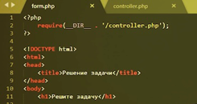
Давайте заново сделаю чтобы было наглядно. Видим 4 1. Нажимаю готовo. Видим, что op1 был 4, сумма была одиночкой, op2 пустая строка, потому что мы ничего не написали и solve_problem это потому, что мы нажали кнопку. Если мы сюда что-то напишем 10 отправим. Видим, что и оп 2 тоже заполнен, то есть массив post отправились все input ключами массивы являются имена input а значение имен value input. Теперь нам это нужно как-то обработать, но обрабатывать мы же не можем посчитать сумму, если мы просто зашли на страничку. Нам нужно считать сумму именно тогда и только тогда, когда была нажета кнопка, как мы можем узнать был нажата ли кнопка. Очень просто мы проверяем существует ли в массиве post Ключ Solve_Problem. Этот ключ существует в массиве post тогда и только тогда, когда мы нажали кнопку готово. Почему мы проверяем именно solve problem. Потому что он относится к этой форме. Если у нас на страничке несколько форм и мы могли нажать разные кнопки нужно ли нам проверять значение первой форм? Нет не нужно. Поэтому проверяем именно кнопочку. Если бы была нужна та кнопка. solve problem. Это означает что форма была заполнена и отправлена. Мы начинаем параметры извлекать из запроса op1 это post об один op2 это post об 2 и сумма. Это post sum.
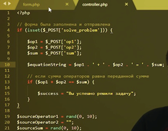
И нам нужно проверить является ли сумма вот этих двух операторов. равно значению которое было передано. Так и пишем. Если op1 плюс op2 равняется сумме. Если сумма операторов равно переданной сумме. То нам нужно вывести как-то уведомление о том, что все прошло успешно? Как мы это делаем, у нас будет две перемены, переменная success которая отвечает за то успешно ли мы решили задачу и перемены error который будет держать себя текст ошибки если та возникла. Мы пишем вы успешно решили задачу. Вот и все. Теперь в форме нам нужно вывести этот текст выведем мы его куда-нибудь под пример. Но над кнопкой готово. Сделаем здесь какой-нибудь div. И проверяем. Если. У нас существует перемены success. Я напомню она существует тогда и только тогда, когда была отправлена форма и когда задача была решена успешно. Если она существует. То открываем и закрываем область php. То нам нужно вывести на экран. Надпись зеленым цветом пусть она будет и надпись будет гласить то, что хранится в переменной success. Вводим и закрываем. Давайте проверять обновляем страничку. Смотрим 9 плюс что-то равно. 4. Ответ, очевидно, минус 5 нажимает готово. Видим зеленым цветом вы успешно решили задачу. Но я не вижу какую задачу я успешно решил. Давайте выведем сам пример. Когда форма была отправлена мы формируем. Строку equationString и она будет содержать сам пример который мы решали.
То есть она должна получиться готовим строку с уравнения возможно что-то получится в виде 10 плюс 5 равно 15 что-то в виде такого. И смотрим здесь если была отправлена форма, то есть если существует переменная equationString она существует тогда и только тогда, когда мы отправили форму. Иначе мы можем написать уравнение. Закрываем область. То мы вводим просто на экран equationString. Проверяем. Ноль плюс что-то равно 7 набираем готово видим 0 + 7 равно 7. Вы успешно решили задачу. Данные у нас уже новые. Можем еще раз 7 плюс что-то равно минус 4 минус 3. Смотрим успешно решили, если мы решим ее неправильно мы видим, что пример появился. Но ошибки никакой нет. Как и нет сообщений об успехе. Давайте обработали ошибки. То есть если мы успешно решили задачу задаем перемену success иначе (else) мы создаем переменую error. Оставим комментарий если задача решена неверно (Error).
И задача решена неверно. И теперь выведем это на экран. Если из этой переменной Error если она существует. То мы выводим на экран ошибку, но уже красным цветом. Красным цветом и выводим на экран сам текст ошибки. Проверяем. 6 плюс что-то равно 7 = 1 правильно. 8 + что-то равно минус 5 =100. Задача решена неверно ведь 8 +100= 5. Задача решена неверно. Но при этом предлагается новый пример, а я хочу, чтобы пользователь мог исправиться и решить старый пример как мне это сделать. Очевидно, нужно обновлять вот эти данные. Тогда и только тогда, когда задача решена верно, или когда задача вообще не решалась и мы просто зашли на страничку подытоживая все вышесказанное нам нужно выполнять вот эти три строчки только тогда, когда задача была решена успешно либо вообще не решалась. Мы не можем просто перенести вот эти три строчки — вот сюда на 14 ю строку. Потому что сюда мы заходим только тогда, когда задача решалась. А если мы просто зашли на страничку числа не будут генерировать. Поэтому поступаем следующим образом сюда мы пишем. Если у нас не существует переменной error. То мы генерирует новые числа. Что значит, что у нас не существует перемен error. Это означает что задача была решена либо верно. Либо вообще не решалось. То есть если у нас задача решена верно либо. Не решалась вообще. А иначе (else). Мы должны оставить старое значение, старое значение у нас сохранятся в переменных op1 op2 и SourceSum перемены sum.
То есть кладем эти значения те, которые пришли от пользователя. Давайте протестируем. Отправляем неправильный ответ. И видим, что значение сохранились. Попробуем еще один неправильный ответ. Значения сохранились. А теперь правильный ответ. Видим значения поменялись. пример выведен верно. И вроде бы как может показаться, что задача решена верно, потому что у нас всё работает, водится ошибки, успешно решили задачу не успешно. Но мы забыли об одном очень важном правиле мы никогда не должны доверять данным, которые приходят от пользователя. Что если пользователь сюда напишет не число. А строку такой ведь может быть просто любой из пользователей. Если он отправят мы увидим ошибку. Это все потому, что мы пытаемся сложить не числовое значение. Как такое решается. Во-первых, все данные, которые приходят от пользователя должны проходить процесс валидации. Сейчас мы этот процесс реализуем.
Что от нас требуется от нас требуется проверить вот эти три значения op1 op2 и сумму. Какие должны быть эти значения? Они должны быть такими что это число. Так проверяем данные. Если, к нам пришли из op1И из op2 и сумма тоже число. То мы начинаем проверку, потому что это числа, и мы можем с ними работать. Вот так. Если же к нам пришли не числа или хотя бы один из операторов не число, то мы пишем ошибку. Введены неверные данные. И значение соответственно остается предыдущее, но не будет строки с примером, потому что примера как такового нет у нас неверные данные. Проверим. Обновим. Вводим неправильный ответ. Вводим строку. Видим введены неверные данные. Дело в том если мы посмотрим на массив post который к нам приходит. Давайте его выведем на экран. Еще число напишу. Мы видим, что op2 имеет тип string. Это значит, что если мы выполним is int то нам вернется false. Даже если там хранится корректно написанное число. Из numeric он же возвращает тогда и только тогда, когда аргументы переданы в эту функцию является числом или строкой, из которой можно извлечь число полностью. То есть вот такая строка из numeric от такой строки вернет false. А вот от такой строки вернет true. удалим лишнее. И проверим еще раз. 8 +5 неверно. 8 плюс строка.
3.5. Стили и стандарты оформления кода - psr-1 и psr-2,
В этом уроке я расскажу вам про стили оформления, как писать код так, чтобы он выглядел как будто его написал профессионал. Кроме того, я также расскажу зачем правильно именовать ваши переменные и ваши функции. А начнем мы с самой важной темы программирование это - стиль оформления кода. Да кто же придумал эти стили? Никакого смысла в соблюдении стилей нет. Они ограничивают наше пространство воображения. Нельзя творить. Нет, это неправильно. У стилей оформления есть четкое назначение. Зачем их придумали и зачем их ввели? Я расскажу вам, почему мы жестко относимся к стилю оформления кода. Стиль оформления придумал не один человек, а целое сообщество профессиональных разработчиков. Долго дискутировали на тему «Как должен выглядеть код?» и в итоге пришли к одному общему мнению, и из этого мнения сформировался стандарт оформления вашего кода. Зачем такой стандарт вообще нужен? Для того чтобы ваш код выглядел точно также как и чужой код. И таким образом вы могли читать совершенно любой код, не тратя усилия на то, чтобы разобрать нюансы в оформлении. А тратить усилия именно на то, чтобы читать логику выполнения этого кода. И это собственно основная причина введения стилей оформления. Ведь если ваш код выглядит также как и чужой код, то для вас это как будто ваш собственный написанный код. Кроме того, для вас как для учеников есть еще и другие преимущества при соблюдении стиля оформления. Первая причина - соблюдая стиля оформления вы одинаково узнаете уже знакомые вам конструкции. Например, если это управляющая конструкция вы сразу поймете, что это она. Это условие, это цикл, и вы будете разбираться с содержимым этой конструкции, а не в том, как она нарисована, как она выглядит. Взгляните на слайд. Здесь есть две управляющие конструкции. Визуально они очень сильно друг от друга отличаются. Какое - то условие проверяет что-то, если это условие выполняется, то выводится сообщение это условие успешно выполнили, а потом else в этом случае вводится при выполнении следующего условия, выводится еще одна строка и else условия не оправдались.
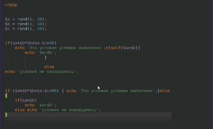
Вроде что-то получилось разобраться давайте посмотрим на следующую
Вроде что-то получилось разобраться давайте посмотрим на следующую конструкцию. Если выполняются условие, какое - то опять большое условие, то снова вводим строку это условие успешно выполнено – «else», внутри ветки и у нас снова условия если больше мы это выводим - а больше б. Если нет, то условия не оправдались. То есть вроде как что - то похожее. А насколько это похоже. А на самом деле это вообще одно и то же условие.
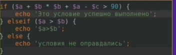
Вот как оно правильно оформлено, если бы оно так было оформлено в обоих случаях, то, вы бы это сразу бы и увидели. У нас есть условия длинное. Здесь какой - то результат рассчитывается из сложной формулы и сравнивается больше ли он 90, если больше 90 то мы выводим это условие успешно выполнено. Затем мы сравним, а >б если больше, то выводим это, а в противном случае мы пишем, условие не выполнилось. Такой код мне кажется гораздо читабельнее, чем два этих примера. И вот она вам помощь для обучения, если вы всегда видите такую конструкцию, условно, вы сразу поймете, что это условная конструкция.
Попробуйте ее здесь углядеть «else» где то там очень тяжело. И еще одна причина это если ваш работодатель посмотрит на ваш код и он выйдет хорошо красиво оформленный код то он поймет что вы скорее всего приличный ответственный человек. Если он увидит какой-нибудь «расколбас», то возможно это плохо скажется на общем впечатлении от вас. Надеюсь, я вас замотивировал в том, чтобы соблюдать стиль оформления. Если нет, то вы воспринимаете это как данность, вы обязаны это делать также как обязаны кушать каждый день, или спать каждый день. И еще одно отвлечение, о котором, к сожалению, приходится сказать, просматривая лекции вы часто можете встретить, что не все преподаватели правильно оформляют свой код. К сожалению, это так. Это исходит из различных причин. Другие причины не всегда можно грамотно уследить, когда ты сконцентрирован на том, чтобы рассказать материал, и ты можешь отвлечься от соблюдения стилей. Ну и иногда не все так хорошо знают и исследователи, как это следовало бы быть. Поэтому каждый раз как вы увидите, что преподаватель не соблюдает стиль оформления можете просто тихонько похихикать. А сами знаете, что надо соблюдать стиль управления всегда и делать это качественно. Ну что ж перейдем наконец - таки к самим стилем оформления. Начнем мы знакомство с первым стандартом он называется psr-1. Этот стандарт устанавливает общие стили на оформление вашего кода.
Мы рассмотрим только ту часть, которая касается функциональной части ту часть, которая касается объекта-ориентированного программирования. Я расскажу вам в теме с объектами этих направлений программирования. Первое, что говорит стандарт, вы можете использовать только два тэга. Это тег «<?PHP» и сокращенной тег «?».
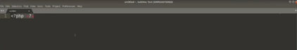
Другие тэги вы использовать не можете для того чтобы открыть «php» код, то есть если вы используете сокращенный «php» тэг вот такой,
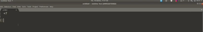
то это ошибка. Так делать не надо. Следующее требование стандарта это – кодировка. Все ваши файлы должны быть в кодировке utf-8, если вы используете sublime, то каждый создаваемый файл будет в этой кодировке если вам нужно изменить кодировку, вы можете использовать опции “reopen” чтобы приоткрыть в какой то кодировке и сейфы чтобы сохранить в указанной кодировке. Вот здесь есть 2 версии «utf-8» с sublime и без нее.
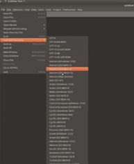
Следующая ошибка это - побочный эффект. О чем это говорит. Если у вас в файле объявляются функции то кроме объявления функций в этих файлах больше ничего не должно быть вы не должны выполнять никакой код ничего выводить в этом файле. И наоборот если ваш файл выводит какие - то данные или выполняет какой - то код, то объявлять функции в этом файле не нужно. Давайте посмотрим на плохой пример. Вот например, есть такой файл
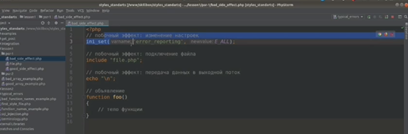
первый вот в этом файл и у нас есть объявление функций. Значит в этом плане не должно быть побочных эффектов какие побочные эффекты в данном случае это изменение настройки то есть выполнение какого то кода, побочный эффект подключения другого файл или побочный эффект это вывод данных.
То есть в этом файле не должно быть побочных эффектов здесь должно быть только объявление функций.
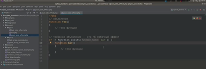
Вот такой файл будет правильнее. То есть мы объявляем одну функцию, объявляем вторую. При этом дополнительные условия на объявление функций побочным эффектом не является. Следующее требование это константа, константы должны именоваться в верхнем регистре каждое слово в имени константы должно быть отделено символом подчеркивания это хорошее наименование константы.
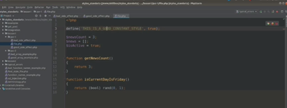
И еще одно требование стандарта по PSR-1 - это наименование ваших переменных вашей переменной и функции должны именоваться «CamelCase» стандарте, то есть первый символ должен быть в маленьком регистре и каждое следующее слово должно быть с большой буквы. Это хорошие примеры наименования ваших функций. При этом сами слова никакими разделителями не отделяются. Просто каждое слово с большой буквы на этом собственно. Стандарт PSR-1 и закончен.
А теперь давайте перейдем к стандарту PSR 2. И первое требование стандарта PSR 2, довольно таки очевидное соблюдайте требования из стандарта PSR1. Опять же мы рассмотрим только ту часть стандарта psr 2, которая не касается объекта активного программирования, первое что требует -наш стиль PSR2. Помимо соблюдения стандартов PSR1. Это то, что каждый PHP файл не должен заканчиваться PHP тэгом. То есть если вы создаете новый файл, новый PHP файл. Открываете PHP тэг и закрывает PHP тэг, в этом месте вы делаете ошибку.
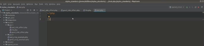
Закрывать PHP тэг не нужно, кроме тех случаев. Есть правило очень простое никогда не закрывать скобки так кроме тех случаев, когда это действительно нужно. А когда это нужно? Например, внутри HTML кода, если у вас есть вставка с PHP в этом случае вам нужно закрыть PHP тэг.
Если у вас чистый PHP файл не закрывайте PHP тэг никогда. Если вы этого не сделаете, то вы можете получить ошибку. Примеры таких ошибок я расскажу чуть позже. А теперь перейдем к требованиям, которые действуют на строки вашего кода. А вообще не должно быть жесткого ограничения на длину вашей строки. Есть такое понятие как мягкое ограничение, то есть вы можете следовать этому правилу, а можете не следовать. А согласно мягкому ограничению длина вашей строки не должна превышать 80 символов. То есть где - то пустая строка. Ну опять же по это требованию не обязательно ваша строка, а может быть и чуть длиннее это не возбраняется. А требования есть другое. В конце вашего файла не должно быть пустых строк ,то есть - пустых пробелов и каких то строк, табуляции и всего такого, то есть это ошибка.
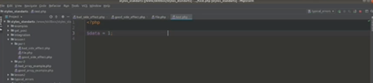
Такого быть не должно. Нужно за этим тоже следить. Если вы пользуетесь редактора таким как «sublime» - это все настраивается и регулируется поставили галочку в нужном месте и все ваши строки будут автоматически абзацы. А также вы не должны использовать несколько выражений в одной строке.
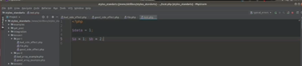
То есть такая запись - это ошибка. Отдельное выражение нужно разместить на отдельные сектора. Следующее одно из моих любимых – отступы, отступы не соблюдает никто. Каждый отступ должен состоять строго из четырех пробелов. То есть если вы пишете так,
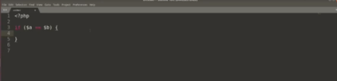
то это ошибка и вот это тоже ошибка. Здесь отступа не должно быть, то есть отступы должны стоять в нужных местах закрывающиеся скобки должны стоять с тем оператором к которому они относятся на том же уровне каждый следующий уровень должен отстоять на один дополнительный отступ, каждый отступ состоит из четырех пробелов.
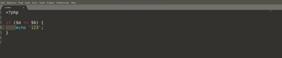
Если вы пользуетесь sublime-ом нажали здесь на SPACES поставили галочку intend using spaces 4 и вы теперь всегда ставите 4 пробелы нажимаю на символ tab width и забыли об этом навсегда. Из - за чего нам нужно ставить 4 пробела.
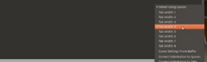
Если вы будете открывать в разных редакторах, то знак табуляции в разных реакторах может отскакивать на различные растояния, если вы ставите 4 пробелы то это всегда 4 пробела. Они везде будут одинаковы. Следующие требования ключевые слова пишутся только в нижнем регистре – false, null, true .Только в нижнем регистре.
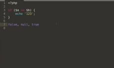
Никаких python-образных форм true и никакого capslock-a.Такого быть не должно только в нижнем регистре – if, switch и так далее. Все эти слова только исключительно в нижнем регистре.
А теперь перейдем к описанию функций. Когда вы описываете функцию указывать ее имя согласно стандарту psr 1 то есть в camel_case и после имени функции перед открывающейся круглой скобкой пробел быть не должно. А внутри открывающихся скобок, в фигурных скобках должна стоять на новой строке закрывающаяся фигурной скобкой точно так же должна стоять на новой строке, то есть тело метода будет только вот здесь
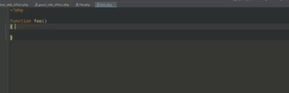
вот здесь писать нельзя это неправильно -
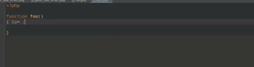
И здесь код тоже писать нельзя, только на новой строке отдельно с отступом. При этом параметры этой функции должны быть перечислены внутри круглых скобок и пробелов внутри скобок быть не должно. Параметры перечисляются через запятую. После каждой запятой обязательно должен стоять пробел.
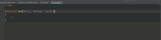
Причем как при описании функции. Сначала должны идти «обязательные параметры» а в конце «не обязательный параметр». Каждый параметр должен быть отделен от другой запятой и пробелом. Вначале идут обязательные параметры в конце не обязательно параметры. При этом перед запятой пробел ставить запрещается. Здесь его быть не должно, а при вызове функции, правило остается тоже, тем же самым. Если вы вызывайте функцию перед круглой скобкой пробела быть не должно. Параметры, которые передаете должны точно таким же образом быть разделены через запятую с пробелом.
A в случае если у вас длинное название переменных. Например, то разрешается переносить параметры на новые строки.
При этом, перенос начинается с первого же параметра. Запятая остается на той же самой строке. Каждый следующий параметр начинается на новой строке добавляется один стандартный отступ с закрывающейся, круглая скобка ставится на новую строку. То есть к ключевому слову, в данном случае к названию функций, на том же уровне, к которому она относится, несколько аргументов в одной строке указывать запрещается, то есть каждый аргумент должен быть на отдельной строке.
Следующая что мы рассмотрим это управляющая конструкция при построении управляющей конструкции используется один общий подход вне зависимости от того какая - то конструкция это может быть условие цикла, switch, все что угодно. Правило первое. Начинается управляющая с конструкцией ключевого слова, после этого ключевого слова обязательно должен стоять один пробел. Затем в круглых скобках указываются параметры опять же внутри круглых скобок. Не должно быть лишних пробелов перед и после скобки пробелов быть не должно. После закрывающие круглые скобки, должен стоять один пробел и должен открываться, должна открыться фигурная скобка. Тело оператора - должно быть внутри с одним отступом. Закрывающая фигурная скобка должна стоять на новой строке. И таким образом можно продолжать если это оператор else, то ставится пробел, else, пробел после ключевого слова условия, пробел после условия, фигурная скобка. Опять же else, пробел, фигурная скобка –
вот таким вот образом оформляются управляющие конструкции, давайте на них посмотрим. Вот, например условие, о котором мы только что разобрали пример
после ключевого слова стоит пробел, внутри круглых скобок пробелов нет. После круглых скобок стоит пробел, фигурными скобками открывается на той же строке, закрывается на новой, открывается на той же, закрывается на новой. То же самое с оператором switch –
пробел после ключевого слова пробел перед фигурной скобкой закрывается на новой строке, окей. Внутри кейса можно не ставить фигурные скобки операции внутри кейса, сдвинуты на один дополнительный отступ. Цикл while то же самое ключевое после ключевого слова пробел внутри скобок пробелов нет. После скобки пробел фигурная скобка открывается на той же стадии. Вот так выглядит цикл do_while
тот же самый подход фигурная скобка все еще на той же самой строке. Цикл for, Опять же не здесь пробелов нет а здесь пробелы есть цикл for each. Реконструкция try each ключевое слово пробел ,фигурная скобка ,пробел. Ключевое слово пробел круглый скобка внутри круглых пробелов нет. После круглый пробел, круглая скобка вот таким образом оформляются все управляющие конструкции. А следующий раздел – это замыкание или так называемой анонимной функции. Анонимные функции или замыкание должны быть после ключевого слова function отделены пробелом. Дальше указываются параметры точно таким же образом, как и в обычных функциях.
И затем через пробел открывается тело этой функции. Фигурная скобка в данном случае стоит на той же самой строке а при использовании оператора use он указывается на той же самой строке что и описание самой функции через пробел. Все точно так же ключевое слово пробел в круглые скобки в конце пробел и фигурная скобка открывается на той же самой строке. В случае если параметры функции опять же имеют очень длинное название можно поступить точно так же. Каждый параметр должен находиться на своей отдельной строке. При этом круглая скобка закрывается на новой строке и через пробел открывается фигурное скобка, здесь начинается тело. То же самое, Можно сделать и с оператором use.
Точно так же каждый следующий параметр на новой строке и пример для использования длинных параметров и длинного оператора use. То есть все еще один и тот же подход. Можно оператор use в этом случае сложить в одну строку и аргументы тоже сложить в одну строку.
То есть на отдельную строку разносить только те параметры, которых много либо не разности их вообще если строка в принципе получается короткая. И еще одно требование дополнительное, которое сейчас в стандарте явно не указано, но в принципе все этому требованию следуют. Поэтому стоит и соблюдать его и вам все операторы должны быть отделены по одному пробелу с каждой стороны будь, то оператор сложения умножения или сравнения, по пробелу с каждой стороны должно быть.
Кроме того, нельзя использовать ключевые слова and или or. Вместо них есть специальные операторы. И или «или» оператор. Нужно использовать именно два этих оператора
нельзя использовать and или or
Это в принципе все требования стандарта psr 2 касающиеся функциональной части то есть не касающиеся объекта ориентированных программирования. Теперь давайте посмотрим действия этого принципа на примере оформления массивов. Давайте посмотрим на примеры плохого оформления массивов.
Вот здесь указаны примеры плохого оформления массивов. Так например массив users операторы. Не отделены. Если здесь есть лишний пробел структура отступов здесь неправильная. Фигурная скобка закрывается не там же, где открывалась. То есть вообще она должна закрываться здесь. И аргументы не отнесены на отдельную новую строку.
В качестве массива используется функция «array»,который уже можно считать устаревшей версии 5.4 появилось оформление массивов, с помощью квадратных скобок старайтесь использовать именно его. Еще один пример неправильного массива. Он в принципе очень схожие проблемы, хотя по отступу здесь правильнее. А вот здесь конечно еще пробел возник. Это все неправильный пример.
И вот еще один пример оформление массива. Три на два.
И давайте посмотрим на эти же самые массивы в правильном исполнении. Вот массив users.
Каждый элемент на новой строке открывающаяся скобка на той же строке, с закрывающейся на том же уровне. Грубо говоря, к переменам или как в случае с ключевыми словами ключевые слова к которым она относится, то есть на самом первом уровне здесь один отступ а все операторы отделены пробелы.
Второй массив
здесь еще можно обратить внимание на название ключей, название ключей используется тот же самый стандарт через camel case. Здесь можно поскольку значение мало эта строка не занимает очень много места можно объединить это весь массив одну строку. То есть каждый элемент на новой строке.
Сначала ключ потом через пробелы оператора отделили и он и значением. А если здесь количество параметров будет увеличиваться то можно преобразовать этот массив вот к такому виду.
Ключик auto у него внутри один уровень вложенности и каждый элемент в этом уровне вложенности стоит на отдельной строке. Таким образом вы можете расширять этот массив дальше и дальше. А завершающую запятую можно ставить и даже на самом деле рекомендуется ставить даже если в конце не идет следующего элемента. И массив также можно оформить двумя способами. Если еще одна ошибка на которую стоит обратить внимание так же как с параметрами функции после запятой должен стоять пробел в исходно варианте этих пробелов не было.
Здесь они уже есть. Вот правильное оформление в несколько строк или правильное оформление в одну строку.
Теперь давайте перейдем к именованию переменных функций классов методов и на хорошем примере поймём, зачем правильно их нужно именовать. Давайте откроем плохой пример. У нас есть такой код
Здесь, совершенно не понятно что здесь идет, потерялось переменная «А», наверное пользователь «иванович» его зовут. Тmp у нас в магазине, магазин темпы ничего непонятно по этому поводу.

И теперь посмотрим, например, где переменным и методом даны правильные названия.
И теперь этот код действительно можно прочитать у нас есть студент, его зовут иванович. Есть магазин, его зовут магазин. Удивительно. Первый метод у нас был один. Это был wake up at проснуться в 7 утра. По названии мы уже понимаем, что здесь происходит студент просыпается с 7 утра walk to, идет студент в магазин. В институт ,то есть студент проснулся в 7 утра пошел в институт до тех пор пока ему нужно учиться. Он учится. После этого после того как он отучился он идет в магазин. В этом магазине он покупает колу. Затем студент идет домой и пока кола не выпита, он ее пьет, а потом идет спать. И все это мы смогли прочитать. Мы понимаем, что происходит в нашей программе как живет наш студент. Просто благодаря правильным названием переменных и методов. Именно поэтому стоит давать правильное название, чем правильнее вы назовете свое имя тем понятнее будет отклик, который я использую. Вообще наименование ваших переменных это наверное 50% вашей работы. Чем лучше именования, тем лучше код, который у вас получается. Ну что же, а теперь давайте немножко попрактикуемся. Я буду показывать вам примеры кода с ошибками. Постарайтесь подсчитать сколько типов ошибок в стилях есть в этом коде и сколько всего ошибок есть со стилем оформления. Давайте приступим. Первый пример.
Посмотрите на фото и посчитайте сколько здесь ошибок. В этом коде всего десять ошибок. 6 Из них разных типов. Давайте посмотрим на первое использование неправильного PHP тэга. Нельзя использовать сокращенной PHP тег.
Второй это установлен закрывающий PHP тэг 2.
Третий не хватает пробелы.
Четвертый Не хватает фигурных скобок.
5 6 7 8 9 10 в этих местах проблема в пробелах
Еще два требования о которых я вам почему то не сказал когда рассказывал про стили. Первое - все файлы должны заканчиваться пустой строкой PHP файл.
Здесь надо поставить пустую строку оставлять обязательно. И еще одно более важное требование. Даже если у вас одна операция внутри вашей управляющей конструкции нужно ставить культурные скобки все равно. И здесь кстати еще один пробел пропущен.
Хорошо давайте посмотрим на следующий пример. Сколько ошибок вы увидите здесь.
В данном коде восемь ошибок и семь разных. Запятая здесь не хватает пробелы.
Операторы должны быть отделены внутри круглых скобок, а пробел стоять не должны.
После имени функции не должно быть пробелов здесь сложно разглядеть мозги не хватает тоже пробелов и пустая строка.
Следующий пример.
Это довольно. Этот код чуть - чуть побольше. И сколько ошибок здесь я насчитал. А здесь я не насчитал ни одной ошибки. Так вот код оформлен с точки зрения оформления совершенно верно.
Видите благодаря соблюдению стиля мы еще также нашли ошибку в структуре этого массива. На этом урок окончен. Мы с вами познакомились со всеми требованиями к оформлению. Надеюсь теперь вы будете стараться соблюдать все стили оформления в вашем городе очень строго потому что думаю что вы хотите стать профессионалами в этой работе.
3.6 Терминология и типовые ошибки
В этом уроке я расскажу вам про терминологию, а также про некоторые типовые ошибки начинающих веб разработчиков. Вообще, когда вы общаетесь с профессионалом, то обращайте внимание на те слова, которые он использует при объяснении вам тех или иных вещей, поскольку профессионалы в терминологии не ошибаются. Когда вы пишете свой код, вы должны четко понимать, что делает каждая следующая строка. Когда вы используете функции, вы должны четко понимать, что делает эта функция, то есть ее основное назначение, какие параметры эта функция принимает и как эти параметры влияют на ее работу, и что функция возвращает. Отсюда мы получили три термина: что делает функция, какие параметры принимает и что возвращает. Первое вы должны понимать, что делает функция, а если быть точнее, то вы сначала должны понять, что такое функция.
Функция — это определенный термин. Это не часть какого-то кода внутри вашего приложения. Функция начинается с ключевого слова function. То есть если вам говорят про функцию или в объекте ориентирован про программирование синоним слова метод, то вы должны представить себе часть ту часть кода, которая начинается с ключевого слова function. Только это и является функцией. Если у вас часть кода написана просто внутри тела страницы, то это уже не функция в этом случае, вам никогда не скажут слово функция. Тут скорее подойдет терминология "функционал". О нем я чуть попозже расскажу.
Следующий термин — это параметры функций. Тут ничего сложного. Это список всех перечисленных параметров, которые принимает функция. Перечисленные через запятую в строке описание функций. То есть параметры — это ничто так что приходит извне или через глобальные перемены каким-то другим образом через сайт. Это именно те параметры, которые описаны в строке описание функций. У параметров могут быть значения по умолчанию. Они если вам говорят, что у параметра должно быть значение по умолчанию значит, это значение должно быть задано в строке описания функций. Например, у параметра "b" значение по умолчанию пустая строка. И третий термин это что возвращает функции. Под словом возвращает, понимается только оператор return. Только использование return в коде вашей функции, будет означать что ваша функция что-то возвращать. Если ваша функция делает echo, чего бы там ни было выводит просто результат строку, то это такая функция она еще ничего не возвращает. То есть если вам говорят, что ваша функция должна вернуть какой-то результат, это значит, что вы обязательно должны использовать оператора return в теле вашей функции. И наоборот, если вам говорят, что функция должна что-то вывести, это значит, что вы должны использовать один из операторов вывода в теле вашей функции, но не оператор return. Если вам говорят, что, функция должна возвращать строку. То это значит, что в вашей функции обязательно должен быть return, и этот return должен возвращать строку ни число, не null, ни какой-нибудь объект, а именно строку. Если вам говорят, что функция должна возвращать число, то извольте возвращать только число. Согласно терминологии, с которой мы только что познакомились такие фразы как: создайте функции, передайте функцию параметра добавьте новый параметр функция. Это все очень конкретные фразы, и они требуют, чтобы вы сделали именно то, что, собственно, в этой фразе и говорится.
Какие еще термины будут часто встречаться. Например, бизнес логика. Бизнес логика — это та часть вашего кода которая выполняет полезные действия. То есть то, ради чего вы, собственно, создаете приложение. Что-то посчитать, что-то вычислить, что-то создать, сохранить, записать, считать. То есть то, ради чего вы создаете свое приложение.
Следующий термин — это функционал. По сути, это синоним бизнес-логики. То есть это не функция не что-то созданный с помощью ключевого слова function, а это какая-то часть вашего кода внутри вашего приложения.
Следующий термин — это отображение. Это внешний вид вашего приложения то как вы вводите результат работы бизнес логики вашего приложения. Когда вы работаете с отображения старайтесь разделять бизнес логику отдельно, отображение отдельно. Таким образом, чтобы бизнес логика формировала данные, которые вы потом в своем отображение будете использовать и выводить в понятном красивом виде.
Следующий термин — это шаблон. Шаблон — это обычно отдельный php файл в котором хранится отображение. То есть внешний вид какой-то части вашего сайта или может быть сайт в целом. Шаблон преимущественно состоит из html кода с вставками php кода.
Интеграция — это всеобъемлющий термин, который может означать например: напишите какой-то небольшую часть кода или напишите взаимодействие с внешней системой или все что угодно. Но чаще всего под интеграцией понимают именно интеграцию вёрстки. То есть, когда у вас есть исходный html код и вы должны из него сделать полноценный рабочий живой сайт интегрировав верстку ваш php код.
Надеюсь, такое уточнение в терминологии поможет вам в освоении нового материала и новых функций, а также поможет вам в реализации исправление ваших домашних работ.
А теперь перейдем к типовым ошибкам, которые делают начинающие веб разработчики. Первое часто встречающиеся ошибка — это использование константа вместо строк, а например при создании новой константы периодически встречается такое что, пытаясь создать новую константа вы уже используете константу, которую пытаетесь создать. Либо часто в ассоциативных массивах вместо ключей иногда указывают константы. Это неправильно.
А почему это работает. Когда php встречает первый незнакомую константу то, что он делает, он выбрасывает предупреждение, то есть не критическую ошибку, а предупреждение. Обычно эти предупреждения не вводится на страничку скрытые настройки конфигурации. Поэтому вы их не видите, и выбрасывает такое предупреждение вместо указанной константы php возвращает строку название которой совпадает с названием константы которое вы пытаетесь использовать. Поэтому такой код физически работает, но на самом деле это неправильно. А как исправить. Заменить константы на строки. Должен получиться следующий код.
Следующая типовая ошибка, это использование переменных, которые еще не существует, то есть те, которые не объявлены. А php вообще по умолчанию не выводят такие ошибки, это уведомление уровня enotes предупреждение. А для того, чтобы включить вывод таких ошибок, нужно использовать конструкцию error reporting и ей передать уровни ошибок, которые вы хотите увидеть, например E_ALL, то есть увидеть все ошибки и установить опцию дисплей error в значение true. После этого такие ошибки будут видны на страничке. Вот такой пример.
Внутри условия мы обращаемся к GET параметру. Давайте для простоты просто попробуем обратиться к несуществующей переменной result. А сравниваем ее с каким-то значением и выводом echo ошибка при этом видно, что переменная result у нас выше по ходу нигде не объявлено. Если мы попробуем выполнить этот код, то мы увидим ошибку уровня enotes с предупреждением что мы используем не существующую переменной result.
А с точки зрения php кода ничего страшного в этом нет, но с точки зрения программного оформления и вашего построения кода вообще это ошибка. На другие языки таких ошибок прощать вам не будут, поэтому старайтесь следить за теми переменами, которые вы использовали. Они должны быть предварительно объявлены. А когда такая ошибка часто встречается. Первый пример это когда вы используете а супер глобальные перемены GET или POST, например в переменной GET вы проверяете значение ключа email равно ли оно указанному значению то есть передано ли вам на страничку ключик email . И часто проверяйте именно в момент отправки такой формы в котором это значение будет содержаться, но не проверяйте тот случай, когда вы форму не отправляете. А в этом случае такого ключа в массиве GET существовать не будет, а значит вы здесь будете обращаться к переменной, которая не существует. Такая же ошибка по аналогии, когда вы будете оперировать переменами из других суперглобальных массивов такие как SESSION либо COOKIE.
Второй случай — это когда внутри условия в одной из веток вы определяете такой перемены. Например, если выполнится условия somecondition то переменной result будет положено какое то значение в данном случае true. Но если это условие не выполнится переменной result даже не будет существовать поскольку раньше вы ее не объявили. В этом случае при проверке условия result а уже возникнет такая ошибка. Точно также с переменной message внутри этого условие это переменная определяется, но вовне это условие этой переменной еще не существует. Поэтому при попытке echo если результат не будет равен true то вы снова получите ошибку на уровне enotes предупреждений. А как избавиться от этих ошибок. Избавиться очень легко. Нужно применять функцию set то есть проверять переменной на существование. А в данном случае нужно добавить функцию isset . То есть проверить ies существует ли такой ключ в массиве GET. И затем уже проверить сравнить этот же самый ключ с указанным значением. Такое условие оно будет правильным, потому что условия проверяются слева направо. То есть вторая часть условие не будет проверяться если не выполнено первое. То есть если не существует ключ email то значение из этого ключа даже не запросим. То есть если поменять эти условия местами. То в случае, если ключик email перемены GET существовать не будет. Вы здесь получите ту же самую ошибку enotes поскольку условий будет проверятся слева направо и сначала вы попробуйте получить значение из массива, а только затем проверьте на существование. То есть вот такой конструкции можно спокойно избежать такой ошибки. А в этом случае возможно использование set уже не так удобно. Есть более простой вариант это объявить перемены по умолчанию. То есть до того, как вы начинаете с ними как-то работать. Придумайте им значение по умолчанию и объявить его. Таким образом вы избавите себя от таких ошибок. А следующая типовая ошибка — это использование глобальных перемен. Не используйте такие перемены никогда. Более того на первый взгляд может показаться что это упрощает, но на самом деле часто избавление от таких глобальных переменах наоборот будет улучшать структуру вашего кода улучшать его читаемость и изменяемость улучшать качество вашего поля. Использование таких переменных — это очень плохой тон. Вот в нашем примере у нас есть массив items с набором простых чисел. А есть переменные getSimpleNumber который в качестве параметра принимает номер простого числа и внутри этого массива пытается найти такое число если оно сейчас не существует, то возвращает 0. А если число такое существует, то возвращает простое число с указанной позиции. А как избавиться от глобальные перемены. А в данном случае все очень просто. А эту глобальную переменную можно указать в качестве параметра нашей функции. То есть теперь наша функция принимать два значения items это набор наших простых чисел и номер оппозиции, с которой надо начать. Теперь для того, чтобы внутрь наших функций попал этот набор его нужно передать в качестве первого параметра. Таким образом мы избавимся от этой ошибки. Но если вернуться к исходному варианту, то можно обратить внимание что скорее всего items у вас используется только внутри этой функции. То есть простым решением в данном случае будет просто перенести этот массив в тело вашей функции. Таким образом вы избавитесь от перемены глобального области видимости и то есть немножко упростите ваш код. А если такая перемена вам нужна не только в этой функции, то тогда возможно будет правильнее воспользоваться параметрами. Есть еще один подход это сделать другую дополнительную функцию, которая будет возвращать ваши глобальные перемены. И эта функция будет просто возвращать массив из простых чисел. И такой код тоже будет гораздо лучше, чем использование глобальных перемен. Таким образом в любом месте кода вы можете вызвать эту функцию и получить массив простых чисел. Следующая типовая ошибка — это переопределение значений в суперглобальных переменах. Это тоже очень плохой тон. Решение этой ошибки ищите другие способы решения. Вот такой небольшой пример у вас есть условия, которые проверять на существование значение суперглобальные перемены и на ее значение в данном случае у нас суперглобальные переменные храниться должен прямо параметр show auth from показывать форм авторизации. И если это значение установлено в 'да' то мы будем выполнять соответствующее код здесь будем выводить нашу форму активизации. А периодически может возникнуть ситуация, когда вам нужно показать эту форму авторизации еще и при выполнении других условий. Например, когда выполняется значение в переменной condition. В этом случае иногда делают так, то есть просто переопределяют глобальные суперглобальные перемены как я уже сказал это очень плохой код. Такое решение является неправильным. Все что нужно сделать это добавить дополнительно условия на показ вашей формы. Вот такая конструкция уже будет правильно и будет выполнять именно ту часть кода, которую вы и задумали. А следующая пара замечаний будет связана с html кодом, а поскольку на примере кода очень хорошо видно эти типовые ошибки, но на самом деле их можно распространить и на остальные части вашего кода. А первая ошибка это попытка обрамить условием большую часть кода чем это нужно. В нашем примере у нас есть простой html файлик. Здесь у нас выводится select внутри этого, то есть выпадающие список внутри этого списка у нас выводится список городов. Москва, Санкт-Петербург, Казань, Владивосток, Магнитогорск и перемены activecity содержится тот город, который мы выбрали в данный момент, то есть Владивосток. А в цикле мы проверяем условия совпадает ли наш город с текущим active и в зависимости от этого условия мы можем вводить одну либо другую часть нашего кода. То есть, например при выполнении этого условия скорее всего мы хотели бы оставить атрибут select то есть этот option то есть этот элемент выпадающего списка должен быть выбран. Давайте я сейчас посмотрим, как выглядит наша формочка сейчас. То есть это простой список. По умолчанию выбран первый элемент это москва. Если здесь добавить атрибут selected то таким образом по умолчанию будет выбран первый элемент а Владивосток давайте приближу что бы было видно. И сейчас очень хорошо видно, что у нас две части кода внутри условия его выполнение условий и ветки else они практически идентичны. Мы делаем одно и то же мы вводим option а внутри этого option поставляем значении город, то есть наше условие сейчас влияет только на параметр select. Таким образом у нас появилось некоторое дублирование нашего кода, то есть мы сейчас поняли, что нам нужно наша option добавить еще значение value. Мы хотим отправлять эту форму значит нам нужно указать здесь value. В качестве value мы будем использовать тот же самый город. И теперь нам необходимо выполнить это действие два раза поскольку у нас код задублирован и так будет продолжаться каждый раз, как только мы захотим изменить одну часть нашего html кода нам придется менять и вторую. Как этого избежать. Нужно это условие переместить на ту часть кода, которая действительно меняется от условий. Помимо того, что мы переместили наши условия, то есть упростили избавились от дублирования мы еще и также избавились от ветки else. В случае если выполняются наши условия, то мы выводим значение selected. Если условие не выполняется, то мы вводим пустую строку. Вот таким образом можно сократить код чаще всего используют именно такую запись поскольку она очень читаема и проста. А следующая типовая ошибка — это вывод оператором echo тегов. А вот сейчас вы видите правильный вариант вывода данных на страницу. И вот пример неправильного варианта вывода данных на страницу с помощью оператора echo выводится теги, а это неправильно. Чаще всего если вы так делайте, то вы скорее всего делаете что-то не так. А кроме тех редких случаев, когда вы точно уверены зачем вы это используете, но это как раз не тот случай. А решение здесь простое закрывает php tag. Вы вводите простые html теги, статичный текст и снова открывайте php tag когда вам нужно а выводить php данные. То есть в данном случае вот здесь нам нужно закрыть php tag, мы начинаем выводить. Обычно html код. Вот здесь у нас встречается php выражение. Мы его оборачиваем php teg. В данном случае с echo. Затем снова закрываем его и продолжаем выводить. А вот сейчас я выделил теги, но оставил вот эту строку внутри php выражения внутри php я склеиваю значение города с префиксом который нужно вывести к каждому городу. У нас такая форма в каждом городе написано наш город и название город. Это тоже на самом деле излишне. Это та же самая скрытая ошибка с помощью оператора echo выводить ту часть, которая не является php кодом. В этом случае статистический текст правильнее будет вынести в html. Таким образом вы разграничите часть кода, который является простым html столичной частью страницы от части кода, который генерируется php кодом. А следующий набор ошибок связан с применением boolean значений. Это обычно те ошибки, которые показывают всем "смотрите я начинающий программист". То есть если вы их делаете, то скорее всего вы выдадите себя. А вот несколько примеров. Вот такое значение. А у нас есть переменные "a" и "b". "a" три "b" четыре это не имеет значения у нас есть условия и в зависимости от этого условия мы в переменную "с" кладем значения true, если это условие выполняется и кладем значения false если это условие не выполняется. А здесь у нас помните из ситуации с не объявленным переменами возникает схожая ситуация хотя у нас в данном случае переменная "с" будет всегда объявлена. А может показаться что вот так. Таким образом вы код свой улучшите, но на самом деле это не совсем так. А что вы кладете значению "с". А вы значит кладете сюда, результат выполнения вот этого выражения то есть истинно оно или ложно. Так, собственно, кладите его напрямую. И это тоже будет правильно. Перемены "с" вы получите результат вычисления значения "а" больше "б". То есть true либо false. Тот код, который у вас был. То же самое ситуация внутри тела функции. При выполнении какого-то условия вы делаете return true или return false. Здесь точно таким же образом вы можете вернуть результат проверки условия поскольку результат работы операторов сравнение это значения true либо false. Следующий пример — это сравнение с true либо сравнение c false. В нашей переменной "c" уже хранится boolean значение. Это значит, что вы boolean сравниваете с boolean рассчитывайте это и получаете в результате boolean, никакого смысла в этом нет. Правильно просто проверять значение boolean переменной в случае, если, "c" true. То вы просто проверяйте значение этой перемены. Если вы хотите проверить на false то нужно добавить здесь отрицание. Еще один хороший пример — это дополнительная проверка очевидного условия. А если в переменного назначения true то выполните эту часть кода. Если не true, то выполняется вторая часть кода. И тут возникает вопрос, а какие еще значения могут быть внутри переменной либо true либо не true. То есть вариантов других никаких нет. Это условие оно излишне. И еще одна ошибка — это использование значений каких-то других вместо boolean, например 0 и 1. Еще можно встретить, например здесь пустую строку. А здесь что-нибудь в таком духе. Если у вас два значения одно истина другое ложно. Старайтесь использовать boolean переменная. А следующая ошибка — это ошибка, связанная с логикой работы вашего приложения. А это когда вы пытаетесь переменную одного типа занести значение другого типа. Либо когда у вас функция возвращает значение различных типов. А с точки зрения php кода никакой ошибки в этом нет. Вы можете спокойно менять типы вашей переменной, когда вам это необходимо. Но с точки зрения построения кода чаще всего это неправильно. То есть всегда можно найти такое решение, которое будет использовать один и тот же тип переменной и будет работать так же, как вы и задумали. То есть такой код, например переменной "а" значение true, но в случае выполнения какого-то условия вы туда вводите строку "ok". Скорее всего подразумевался false. То есть сначала в false потом выполняется условие, и вы кладете значение "ok". То есть скорее всего правильно будет положить сюда значение true и как-то по-другому обработать. Или, когда ваша функция возвращает различные значения вот эта функция, например означает три различных значения при выполнении одного слова в строку выполнение другого условие 0 и при невыполнении обеих условий возвращает null. Это тоже неправильно нужно стараться избегать такого, а избегать можно только переделывая логику работы вашего кода. А следующая типовая ошибка это излишний одноразовый переменной в 99 процентах случаев одноразовый переменные, вам не нужны. А вы их делали зря. У нас такой есть примеры есть массив items в котором хранятся товары предмет один предмет два с каждой ценой нам нужно вывести название товара и его цену. А обычно цикл foreach по всем товарам мы проходим, для каждого товара мы создаем временную переменную name и price и они являются одноразовыми мы ее один раз объявили и один раз использовали. А здесь никакой выгоды в этом нет. Решение простое просто избавьтесь от таких переменных. В нашем примере было всего два параметра. Если у вас здесь 100 ключей, то здесь вы бы таким же образом создали 100 переменных и ваш код, который выводит, очень глубоко бы убежал от кода, который формирует. То есть вот здесь вы еще помните, что внутри item у вас лежит товар. А здесь объявив 100 различных переменных вы будете уже не видеть какой какая переменная к чему относится в каком исходным ключе, а было значение той именной переменны как назывался ключ price вашим товаре. Что вам нужно поменять в структуре вашего товара чтобы здесь соответственно поменять значение. Это нам нужно будет лезть сюда разбираться в этом коде, где эта переменная объявляется. На самом деле это не очень тяжело, но не совсем правильно. Когда вы используете ключи напрямую или напрямую обращайтесь к интерируемому объекту. Это заметно упрощает дальнейшее чтение, и восприятие кода вы точно понимаете "A здесь у меня товар. Я обращаюсь к такому-то ключу значит в этом ключе мне надо что-то поменять чтобы поменять здесь". И опять же если у вас будет 100 параметров, то у вас не будет лишних ста переменных вы просто будете обращаться к ключу исходному массива. Иногда такие переменной вспомогательные alias можно использовать, когда это действительно имеет смысл если вы достаете данные из каких-то других под массивами, а то иногда можно создать перемены с alias который будет хранить значение которого достали из какого-то другого места. Но опять же если вы использовать будете использовать эту переменную более чем один раз вот, например переименуют item используется более чем один раз значит она скорее всего имеет смысл. Еще одна типовая ошибка, связанная с логикой работы вашего приложения. Это не до конца понимание работы вашей функции как ваша функция ведет себя в тех или иных ситуациях. Разберем на примере двух функциях. Функция in array и функция array search. А у нас есть массив с простым значением с простыми числами, и мы хотим узнать число 11 оно является простым числом или не является. И в этом случае нам нужно вывести позицию этого числа. Для этого функции in array можно определить есть ли указанное значение в этом массиве. То есть мы проверяем есть ли это значения в этом массиве, если оно есть, то с помощью функции array search мы можем вернуть индекс этого элемента. То есть позиция этого числа будет, значение функции, которое вернет array search в этом случае он вернет 5 позиций, если значение 11 нет, то мы видим число не найдено. А в чем здесь ошибка. А не до конца изучили функцию array search. А если представить, что массив numbers состоит не из 6 значений, а из 60 миллионов значений, то каждая такая функция будет стоить очень дорого. С точки зрения поглощения ресурсов, то есть каждый лишний вызов таких функции будет для вас ресурсы затратным много времени на них будет уходить. А если внимательно почитать, но на работу функция растет что можно вычитать что в случае, если array search не находит значения, он возвращает false в любом другом случае он возвращает ключи, то есть в этом вы знаете, что у вас ключи начинаются с нуля. То есть если array search, возвращает число. Значит это ключ если он возвращает false, значит array search не нашел значения. Как нужно действовать в этом случае. Избавиться от излишнего вызова функции in array, здесь можно даже создать временную переменную, в которую положить позиции position. И если этот position не равен false (тождественные неравенство использую). То есть если позиция точно не равен false то есть это число значит мы нашли а значит мы можем вывести эту позицию здесь если это не так то выводим что число не найдено. Здесь может показаться что position одноразовая переменная на самом деле это не так. Она используется два раза, один раз в условия второй раз при выводе. Если не использовать ее, то скорее всего придется сделать array search еще раз, здесь. А это та же самая ошибка, которая была изначально, мы используем функции, которые могут выполняться очень долго при очень больших массивах. И еще она часто встречающиеся ошибка это попытка вывести то чего не надо выводить. Например, есть директива include, с помощью которой можно подключить файл. Вот у нас в файле написано "всем привет". У нас есть простая страничка, здесь в начале мы хотим написать "всем привет" а затем вывести значение переменной line. А то есть у нас должна быть написана "всем привет" содержимое вот этого файлика, а потом отступ и на новой строке должно быть написано "привет из переменной" но если мы сейчас заглянем в браузер, то мы увидим "всем привет" один "привет из переменной" один. Откуда такая ошибка появляется. Эта ошибка появляется при попытке сделать оператор echo. Это сокращенное запись от оператора echo. И здесь мы выводим, а что мы выводим. Помните терминологию что возвращает каждой функции. Функции includ возвращает true либо false. Удалось ли подключить файл или не удалось. Таким образом этот оператор echo выводит результат работы функций. То же самое и здесь этот оператор echo выводит результат работы функции print. В обоих случаях это true, а вывести нам удалось файл подключить нам удалось значит true. А true при переводе в строку будет единицей. Отсюда собственно эта единица и выводиться. Важно понимать, когда вы используете те или иные функции что они делают возвращают ли они что-то или вводят. Функция includ подключают файл. Файл из себя представляет простой html. То есть этот html будет выведен и без оператора echo. Функция print выводит свои значения, но она не возвращает это значение. То есть для того, чтобы вывести эту переменная достаточно просто применить функции print. А возможно еще более правильно здесь даже не применить функцию print а просто сделать echo. Теперь наш html выглядит правильно он у нас здесь нет загадочных единичек.